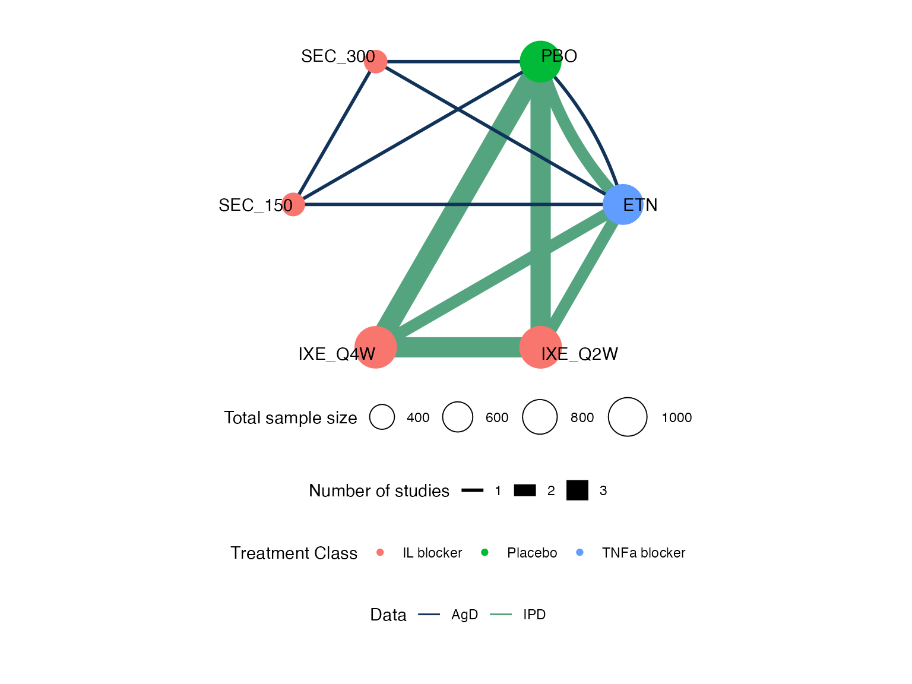
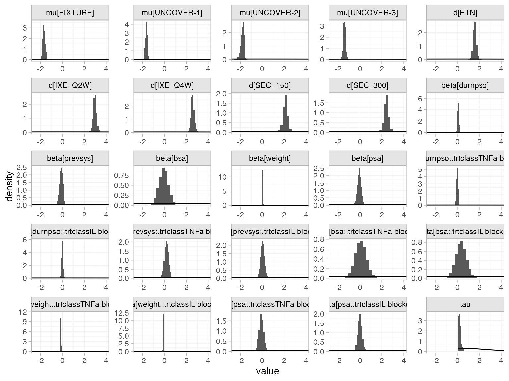
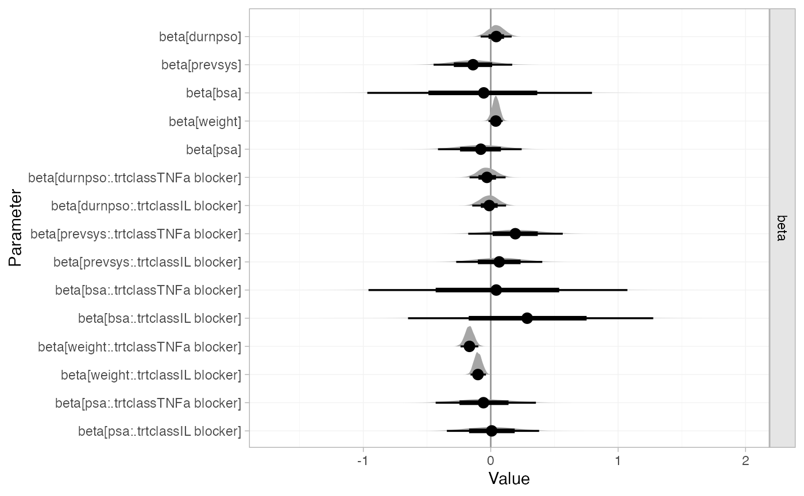
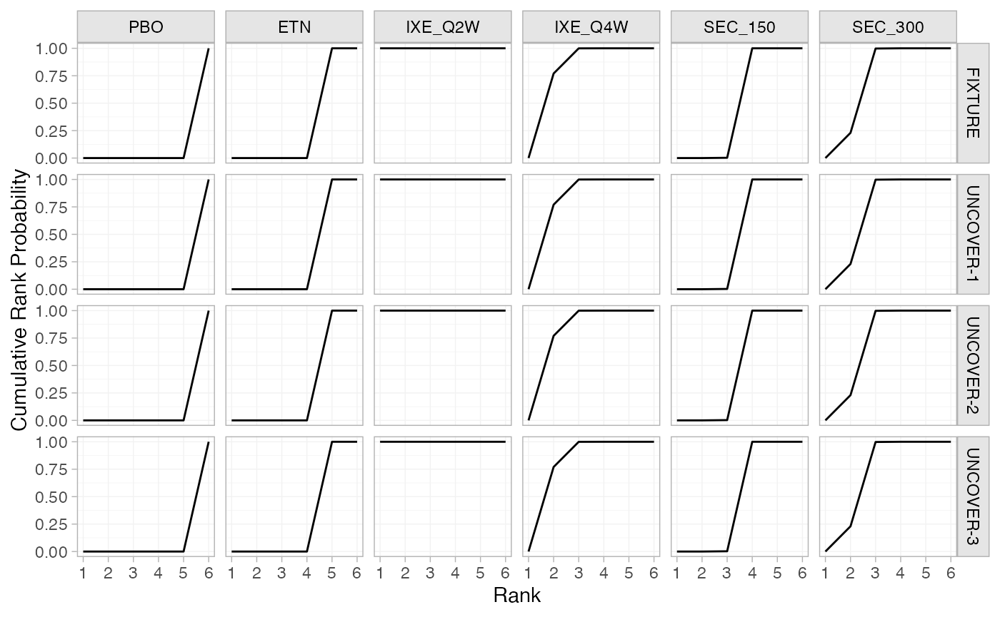
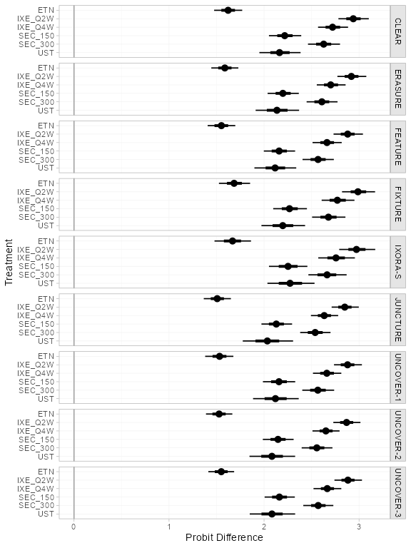
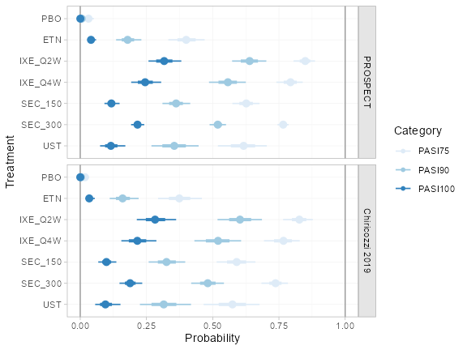

Example: Plaque psoriasis ML-NMR
Source:vignettes/example_plaque_psoriasis.Rmd
example_plaque_psoriasis.Rmd
library(multinma)
#> For execution on a local, multicore CPU with excess RAM we recommend calling
#> options(mc.cores = parallel::detectCores())
#>
#> Attaching package: 'multinma'
#> The following objects are masked from 'package:stats':
#>
#> dgamma, pgamma, qgamma
library(dplyr) # dplyr and tidyr for data manipulation
#>
#> Attaching package: 'dplyr'
#> The following objects are masked from 'package:stats':
#>
#> filter, lag
#> The following objects are masked from 'package:base':
#>
#> intersect, setdiff, setequal, union
library(tidyr)
library(ggplot2) # ggplot2 for plotting covariate distributions
options(mc.cores = parallel::detectCores())Simulated individual patient data (IPD) from trials comparing
treatments for plaque psoriasis are found in the data set
plaque_psoriasis_ipd. Aggregate data (AgD) are available on
a further set of trials, found in the data set
plaque_psoriasis_agd. In this vignette, we recreate the
multilevel network meta-regression (ML-NMR) analyses performed by Phillippo et al. (2020) and Phillippo et al. (2022; see also Phillippo 2019).
In the first analysis (Phillippo et al. 2020), we consider a network of four studies with a binary outcome (success/failure to achieve a 75% reduction on the psoriasis area and severity index, PASI 75).
In the second analysis (Phillippo et al. 2022), we extend this network with a further five studies and demonstrate how the key assumptions of population adjustment can be assessed in this larger network. We also demonstrate how to produce estimates for three external target populations, and fit a multinomial model to incorporate ordered categorical outcomes (PASI 75, PASI 90, and PASI 100).
Initial analysis
We start by recreating the analysis presented by Phillippo et al. (2020). We will analyse IPD from three studies, UNCOVER-1, UNCOVER-2, and UNCOVER-3 (Griffiths et al. 2015; Gordon et al. 2016), and AgD from one study, FIXTURE (Langley et al. 2014).
pso_ipd <- filter(plaque_psoriasis_ipd,
studyc %in% c("UNCOVER-1", "UNCOVER-2", "UNCOVER-3"))
pso_agd <- filter(plaque_psoriasis_agd,
studyc == "FIXTURE")
head(pso_ipd)
#> studyc trtc_long trtc trtn pasi75 pasi90 pasi100 age bmi pasi_w0 male bsa
#> 1 UNCOVER-1 Ixekizumab Q2W IXE_Q2W 2 0 0 0 34 32.2 18.2 TRUE 18
#> 2 UNCOVER-1 Ixekizumab Q2W IXE_Q2W 2 1 0 0 64 41.9 23.4 TRUE 33
#> 3 UNCOVER-1 Ixekizumab Q2W IXE_Q2W 2 1 1 0 42 26.2 12.8 TRUE 33
#> 4 UNCOVER-1 Ixekizumab Q2W IXE_Q2W 2 0 0 0 45 52.9 36.0 FALSE 50
#> 5 UNCOVER-1 Ixekizumab Q2W IXE_Q2W 2 1 0 0 67 22.9 20.9 FALSE 35
#> 6 UNCOVER-1 Ixekizumab Q2W IXE_Q2W 2 1 1 1 57 22.4 18.2 TRUE 29
#> weight durnpso prevsys psa
#> 1 98.1 6.7 TRUE TRUE
#> 2 129.6 14.5 FALSE TRUE
#> 3 78.0 26.5 TRUE FALSE
#> 4 139.9 25.0 TRUE TRUE
#> 5 54.2 11.9 TRUE FALSE
#> 6 67.5 15.2 TRUE FALSE
head(pso_agd)
#> studyc trtc_long trtc trtn pasi75_r pasi75_n pasi90_r pasi90_n pasi100_r
#> 1 FIXTURE Etanercept ETN 4 142 323 67 323 14
#> 2 FIXTURE Placebo PBO 1 16 324 5 324 0
#> 3 FIXTURE Secukinumab 150 mg SEC_150 5 219 327 137 327 47
#> 4 FIXTURE Secukinumab 300 mg SEC_300 6 249 323 175 323 78
#> pasi100_n sample_size_w0 age_mean age_sd bmi_mean bmi_sd pasi_w0_mean pasi_w0_sd male
#> 1 323 326 43.8 13.0 28.7 5.9 23.2 9.8 71.2
#> 2 324 326 44.1 12.6 27.9 6.1 24.1 10.5 72.7
#> 3 327 327 45.4 12.9 28.4 5.9 23.7 10.5 72.2
#> 4 323 327 44.5 13.2 28.4 6.4 23.9 9.9 68.5
#> bsa_mean bsa_sd weight_mean weight_sd durnpso_mean durnpso_sd prevsys psa
#> 1 33.6 18.0 84.6 20.5 16.4 12.0 65.6 13.5
#> 2 35.2 19.1 82.0 20.4 16.6 11.6 62.6 15.0
#> 3 34.5 19.4 83.6 20.8 17.3 12.2 64.8 15.0
#> 4 34.3 19.2 83.0 21.6 15.8 12.3 63.0 15.3We consider running a ML-NMR adjusting for five potential
effect-modifying covariates: duration of psoriasis durnpso,
weight weight, previous systemic treatment
prevsys, body surface area bsa, and psoriatic
arthritis psa.
Setup
Preparing the data
We need to prepare the data so that it is in an acceptable format to
run a ML-NMR model. Firstly, we need to handle the binary covariates
prevsys and psa. In the IPD, these are coded
as TRUE or FALSE, but in the AgD these are
coded as percentages (out of 100). We need these to transform both of
these sets of variables so that they are numeric and lie in the interval
\([0,1]\), so that the variables are
compatible across the data sources. Whilst we are here, we also
transform body surface area bsa (a percentage) to lie in
\([0,1]\), since that will make
specifying an appropriate marginal distribution easier later, and
rescale weight and duration to aid
interpretation of the regression coefficients (in terms of 10 kilos and
10 years respectively). We also add in a trtclass variable,
indicating which treatments belong to which classes. Finally, we check
for missing values in the IPD.
pso_ipd <- pso_ipd %>%
mutate(# Variable transformations
bsa = bsa / 100,
prevsys = as.numeric(prevsys),
psa = as.numeric(psa),
weight = weight / 10,
durnpso = durnpso / 10,
# Treatment classes
trtclass = case_when(trtn == 1 ~ "Placebo",
trtn %in% c(2, 3, 5, 6) ~ "IL blocker",
trtn == 4 ~ "TNFa blocker"),
# Check complete cases for covariates of interest
complete = complete.cases(durnpso, prevsys, bsa, weight, psa)
)
pso_agd <- pso_agd %>%
mutate(
# Variable transformations
bsa_mean = bsa_mean / 100,
bsa_sd = bsa_sd / 100,
prevsys = prevsys / 100,
psa = psa / 100,
weight_mean = weight_mean / 10,
weight_sd = weight_sd / 10,
durnpso_mean = durnpso_mean / 10,
durnpso_sd = durnpso_sd / 10,
# Treatment classes
trtclass = case_when(trtn == 1 ~ "Placebo",
trtn %in% c(2, 3, 5, 6) ~ "IL blocker",
trtn == 4 ~ "TNFa blocker")
)A small number of individuals have missing covariates:
Since the proportion of missing data is so small, we will simply exclude these individuals from the analysis.
pso_ipd <- filter(pso_ipd, complete)Creating the network
Set up the network, setting the IPD with set_ipd(), AgD
(arm-based) with set_agd_arm(), and combining together
using combine_network(). We specify the binary
pasi75 outcome as r in the IPD, and the count
outcome pasi75_r and denominator pasi75_n as
r and n in the AgD. We specify the treatment
classes with trt_class = trtclass.
pso_net <- combine_network(
set_ipd(pso_ipd,
study = studyc,
trt = trtc,
r = pasi75,
trt_class = trtclass),
set_agd_arm(pso_agd,
study = studyc,
trt = trtc,
r = pasi75_r,
n = pasi75_n,
trt_class = trtclass)
)
pso_net
#> A network with 3 IPD studies, and 1 AgD study (arm-based).
#>
#> ------------------------------------------------------------------- IPD studies ----
#> Study Treatment arms
#> UNCOVER-1 3: IXE_Q2W | IXE_Q4W | PBO
#> UNCOVER-2 4: ETN | IXE_Q2W | IXE_Q4W | PBO
#> UNCOVER-3 4: ETN | IXE_Q2W | IXE_Q4W | PBO
#>
#> Outcome type: binary
#> ------------------------------------------------------- AgD studies (arm-based) ----
#> Study Treatment arms
#> FIXTURE 4: PBO | ETN | SEC_150 | SEC_300
#>
#> Outcome type: count
#> ------------------------------------------------------------------------------------
#> Total number of treatments: 6, in 3 classes
#> Total number of studies: 4
#> Reference treatment is: PBO
#> Network is connectedWe can produce a network plot with the plot()
method:
plot(pso_net, weight_nodes = TRUE, weight_edges = TRUE, show_trt_class = TRUE) +
ggplot2::theme(legend.position = "bottom", legend.box = "vertical")
Numerical integration for ML-NMR
ML-NMR models define the meta-regression model at the individual level, in exactly the same manner as a full-IPD meta-regression. ML-NMR then incorporates the AgD into the model by integrating this individual-level model over the covariate distribution in each AgD study (Phillippo et al. 2020; Phillippo 2019). Using integration, instead of simply “plugging-in” mean covariate values for the AgD studies, avoids aggregation bias when the link function is not the identity function.
This package utilises numerical integration to incorporate the aggregate data - specifically, quasi-Monte Carlo (QMC) integration with a Gaussian copula (Phillippo et al. 2020; Phillippo 2019). QMC integration is a very general and flexible integration approach, which typically requires far fewer integration points than standard (pseudo-random) Monte-Carlo integration to achieve the same numerical accuracy.1 A Gaussian copula allows us to account for correlations between covariates, which may have any specified marginal distributions.
We now set up the numerical integration for the network. The five
covariates that we will consider adjusting for are body surface area
bsa, duration of psoriasis durnpso, previous
systemic treatment prevsys, psoriatic arthritis
psa, and weight weight. We need to choose
suitable marginal distributions for these covariates to draw the
integration points from. prevsys and psa are
binary covariates, so these are given a Bernoulli distribution.
bsa is a percentage, so we choose a logit-Normal
distribution (note, this requires the logitnorm package to
be installed). We choose Gamma distributions for durnpso
and weight to account for skewness. These choices seem to
match well the marginal distributions observed in the IPD:
# Get mean and sd of covariates in each study
ipd_summary <- pso_ipd %>%
group_by(studyc) %>%
summarise_at(vars(weight, durnpso, bsa), list(mean = mean, sd = sd, min = min, max = max)) %>%
pivot_longer(weight_mean:bsa_max, names_sep = "_", names_to = c("covariate", ".value")) %>%
# Assign distributions
mutate(dist = recode(covariate,
bsa = "dlogitnorm",
durnpso = "dgamma",
weight = "dgamma")) %>%
# Compute density curves
group_by(studyc, covariate) %>%
mutate(value = if_else(dist == "dlogitnorm",
list(seq(0, 1, length.out = 101)),
list(seq(min*0.8, max*1.2, length.out = 101)))) %>%
unnest(cols = value) %>%
mutate(dens = eval(call(first(dist), x = value, mean = first(mean), sd = first(sd))))
# Plot histograms and assumed densities
pso_ipd %>%
pivot_longer(c(weight, durnpso, bsa), names_to = "covariate", values_to = "value") %>%
ggplot(aes(x = value)) +
geom_histogram(aes(y = after_stat(density)),
binwidth = function(x) diff(range(x)) / nclass.Sturges(x),
boundary = 0,
fill = "grey50") +
geom_line(aes(y = dens), data = ipd_summary,
colour = "darkred", linewidth = 0.5) +
facet_wrap(~studyc + covariate, scales = "free", ncol = 3) +
theme_multinma()
We add integration points to the AgD studies in the network using the
add_integration() function. Marginal distributions for each
covariate are specified using the distr() function, which
takes a cumulative distribution function corresponding to the chosen
marginal distribution, and arguments to that distribution as column
names in the aggregate data. Since we do not know the correlations
between covariates in the AgD studies, we impute these with the weighted
mean of the correlations in the IPD studies (the default option).
pso_net <- add_integration(pso_net,
durnpso = distr(qgamma, mean = durnpso_mean, sd = durnpso_sd),
prevsys = distr(qbern, prob = prevsys),
bsa = distr(qlogitnorm, mean = bsa_mean, sd = bsa_sd),
weight = distr(qgamma, mean = weight_mean, sd = weight_sd),
psa = distr(qbern, prob = psa),
n_int = 64
)
#> Using weighted average correlation matrix computed from IPD studies.Note: This package provides several convenience functions for specifying these distributions, including
qgamma()which allows for a parameterisation of the Gamma distribution in terms of mean and standard deviation,qbern()which provides the Bernoulli distribution, andqlogitnorm()which provides the logit-Normal distribution allowing for a parameterisation in terms of mean and standard deviation (requires thelogitnormpackage to be installed).
ML-NMR models
We fit both fixed effect (FE) and random effects (RE) ML-NMR models.
Fixed effect ML-NMR
First, we fit a FE ML-NMR model using the function
nma(). Following (Phillippo et al.
2020) we specify weakly-informative \(N(0, 10^2)\) priors on each parameter. The
range of parameter values implied by these prior distributions can be
checked using the summary() method:
summary(normal(scale = 10))
#> A Normal prior distribution: location = 0, scale = 10.
#> 50% of the prior density lies between -6.74 and 6.74.
#> 95% of the prior density lies between -19.6 and 19.6.The regression model is specified with
regression = ~(durnpso + prevsys + bsa + weight + psa)*.trt,
which will include the main (prognostic) effects of each covariate as
well as interactions with treatment. We use a probit link function
(link = "probit"), and specify that the two-parameter
Binomial approximation for the aggregate-level likelihood should be used
(likelihood = "bernoulli2", where “bernoulli” refers to the
individual-level likelihood, and “2” denotes the two-parameter
adjustment to the aggregate-level likelihood) (Phillippo et al.
2020). We utilise the shared effect modifier assumption to
help identify the model, setting treatment-covariate interactions to be
equal within each class (class_interactions = "common"). We
narrow the possible range for random initial values with
init_r = 0.1 (the default is init_r = 2),
since probit models in particular are often hard to initialise. Using
the QR decomposition (QR = TRUE) greatly improves sampling
efficiency here, as is often the case for regression models.
pso_fit_FE <- nma(pso_net,
trt_effects = "fixed",
link = "probit",
likelihood = "bernoulli2",
regression = ~(durnpso + prevsys + bsa + weight + psa)*.trt,
class_interactions = "common",
prior_intercept = normal(scale = 10),
prior_trt = normal(scale = 10),
prior_reg = normal(scale = 10),
init_r = 0.1,
QR = TRUE)
#> Note: Setting "PBO" as the network reference treatment.Basic parameter summaries are given by the print()
method:
print(pso_fit_FE)
#> A fixed effects ML-NMR with a bernoulli2 likelihood (probit link).
#> Regression model: ~(durnpso + prevsys + bsa + weight + psa) * .trt.
#> Centred covariates at the following overall mean values:
#> durnpso prevsys bsa weight psa
#> 1.8134535 0.6450416 0.2909089 8.9369318 0.2147914
#> Inference for Stan model: binomial_2par.
#> 4 chains, each with iter=2000; warmup=1000; thin=1;
#> post-warmup draws per chain=1000, total post-warmup draws=4000.
#>
#> mean se_mean sd 2.5% 25% 50% 75%
#> beta[durnpso] 0.04 0.00 0.06 -0.08 0.00 0.04 0.09
#> beta[prevsys] -0.14 0.00 0.16 -0.45 -0.24 -0.14 -0.04
#> beta[bsa] -0.07 0.01 0.44 -0.98 -0.35 -0.06 0.22
#> beta[weight] 0.04 0.00 0.03 -0.01 0.02 0.04 0.06
#> beta[psa] -0.08 0.00 0.17 -0.42 -0.19 -0.08 0.04
#> beta[durnpso:.trtclassTNFa blocker] -0.03 0.00 0.07 -0.18 -0.08 -0.03 0.02
#> beta[durnpso:.trtclassIL blocker] -0.01 0.00 0.07 -0.14 -0.06 -0.01 0.03
#> beta[prevsys:.trtclassTNFa blocker] 0.19 0.00 0.19 -0.18 0.07 0.19 0.31
#> beta[prevsys:.trtclassIL blocker] 0.07 0.00 0.18 -0.28 -0.05 0.07 0.18
#> beta[bsa:.trtclassTNFa blocker] 0.05 0.01 0.53 -0.98 -0.30 0.05 0.40
#> beta[bsa:.trtclassIL blocker] 0.29 0.01 0.49 -0.64 -0.04 0.28 0.62
#> beta[weight:.trtclassTNFa blocker] -0.17 0.00 0.03 -0.23 -0.19 -0.17 -0.14
#> beta[weight:.trtclassIL blocker] -0.10 0.00 0.03 -0.16 -0.12 -0.10 -0.08
#> beta[psa:.trtclassTNFa blocker] -0.05 0.00 0.21 -0.46 -0.20 -0.06 0.08
#> beta[psa:.trtclassIL blocker] 0.01 0.00 0.19 -0.35 -0.12 0.01 0.13
#> d[ETN] 1.55 0.00 0.08 1.40 1.50 1.55 1.61
#> d[IXE_Q2W] 2.95 0.00 0.09 2.79 2.90 2.95 3.01
#> d[IXE_Q4W] 2.54 0.00 0.08 2.39 2.49 2.54 2.60
#> d[SEC_150] 2.14 0.00 0.12 1.92 2.06 2.14 2.22
#> d[SEC_300] 2.45 0.00 0.12 2.22 2.37 2.45 2.53
#> lp__ -1653.70 0.09 3.51 -1661.33 -1655.85 -1653.40 -1651.25
#> 97.5% n_eff Rhat
#> beta[durnpso] 0.16 6751 1
#> beta[prevsys] 0.18 6750 1
#> beta[bsa] 0.77 5057 1
#> beta[weight] 0.09 6718 1
#> beta[psa] 0.25 5533 1
#> beta[durnpso:.trtclassTNFa blocker] 0.12 7157 1
#> beta[durnpso:.trtclassIL blocker] 0.12 7618 1
#> beta[prevsys:.trtclassTNFa blocker] 0.56 7660 1
#> beta[prevsys:.trtclassIL blocker] 0.41 8255 1
#> beta[bsa:.trtclassTNFa blocker] 1.12 5708 1
#> beta[bsa:.trtclassIL blocker] 1.27 6562 1
#> beta[weight:.trtclassTNFa blocker] -0.10 6954 1
#> beta[weight:.trtclassIL blocker] -0.04 7694 1
#> beta[psa:.trtclassTNFa blocker] 0.36 6208 1
#> beta[psa:.trtclassIL blocker] 0.37 6585 1
#> d[ETN] 1.71 4478 1
#> d[IXE_Q2W] 3.12 5633 1
#> d[IXE_Q4W] 2.70 6566 1
#> d[SEC_150] 2.37 4926 1
#> d[SEC_300] 2.69 5277 1
#> lp__ -1647.74 1496 1
#>
#> Samples were drawn using NUTS(diag_e) at Wed Jan 10 10:40:04 2024.
#> For each parameter, n_eff is a crude measure of effective sample size,
#> and Rhat is the potential scale reduction factor on split chains (at
#> convergence, Rhat=1).By default, summaries of the study-specific intercepts \(\mu_j\) are hidden, but could be examined
by changing the pars argument:
The prior and posterior distributions can be compared visually using
the plot_prior_posterior() function:
plot_prior_posterior(pso_fit_FE, prior = c("intercept", "trt", "reg"))
We now recommend assessing sufficient accuracy of the numerical
integration by running half of the chains with n_int / 2
integration points and half with the full n_int. Any
Rhat or n_eff diagnostic warnings can then
either be attributed to insufficient MCMC iterations (argument
iter in nma()) or to insufficient integration
points (n_int in add_integration()), depending
on whether they occur within the two groups of chains or for all chains
combined. This feature is enabled by default
(int_check = TRUE). In this case, there are no warnings and
so we are content with both the number of iterations and with the number
of integration points.
(Phillippo et al. (2020) used an
alternative approach based on saving cumulative integration points and
plotting the empirical integration error, which can be achieved by
setting int_thin in nma() and using the
plot_integration_error() function.)
Random effects ML-NMR
We now fit a RE model. Again, we specify weakly-informative \(N(0, 10^2)\) priors on each parameter, and
now specify a \(\textrm{half-N}(0,
2.5^2)\) prior for the heterogeneity standard deviation \(\tau\). The range of parameter values
implied by these prior distributions can be checked using the
summary() method:
summary(normal(scale = 10))
#> A Normal prior distribution: location = 0, scale = 10.
#> 50% of the prior density lies between -6.74 and 6.74.
#> 95% of the prior density lies between -19.6 and 19.6.
summary(half_normal(scale = 2.5))
#> A half-Normal prior distribution: location = 0, scale = 2.5.
#> 50% of the prior density lies between 0 and 1.69.
#> 95% of the prior density lies between 0 and 4.9.Fitting the model uses the same call to nma() as before,
except now with trt_effects = "random".
pso_fit_RE <- nma(pso_net,
trt_effects = "random",
link = "probit",
likelihood = "bernoulli2",
regression = ~(durnpso + prevsys + bsa + weight + psa)*.trt,
class_interactions = "common",
prior_intercept = normal(scale = 10),
prior_trt = normal(scale = 10),
prior_reg = normal(scale = 10),
prior_het = half_normal(scale = 2.5),
init_r = 0.1,
QR = TRUE)
#> Note: Setting "PBO" as the network reference treatment.
#> Warning: There were 5 divergent transitions after warmup. See
#> https://mc-stan.org/misc/warnings.html#divergent-transitions-after-warmup
#> to find out why this is a problem and how to eliminate them.
#> Warning: Examine the pairs() plot to diagnose sampling problemsBasic parameter summaries are given by the print()
method:
print(pso_fit_RE)
#> A random effects ML-NMR with a bernoulli2 likelihood (probit link).
#> Regression model: ~(durnpso + prevsys + bsa + weight + psa) * .trt.
#> Centred covariates at the following overall mean values:
#> durnpso prevsys bsa weight psa
#> 1.8134535 0.6450416 0.2909089 8.9369318 0.2147914
#> Inference for Stan model: binomial_2par.
#> 4 chains, each with iter=2000; warmup=1000; thin=1;
#> post-warmup draws per chain=1000, total post-warmup draws=4000.
#>
#> mean se_mean sd 2.5% 25% 50% 75%
#> beta[durnpso] 0.05 0.00 0.06 -0.07 0.01 0.05 0.09
#> beta[prevsys] -0.13 0.00 0.16 -0.44 -0.23 -0.13 -0.02
#> beta[bsa] -0.10 0.01 0.45 -0.98 -0.41 -0.10 0.21
#> beta[weight] 0.04 0.00 0.03 -0.02 0.02 0.04 0.06
#> beta[psa] -0.06 0.00 0.17 -0.41 -0.17 -0.06 0.05
#> beta[durnpso:.trtclassTNFa blocker] -0.03 0.00 0.07 -0.17 -0.08 -0.03 0.01
#> beta[durnpso:.trtclassIL blocker] -0.02 0.00 0.07 -0.14 -0.06 -0.02 0.03
#> beta[prevsys:.trtclassTNFa blocker] 0.18 0.00 0.19 -0.19 0.06 0.18 0.31
#> beta[prevsys:.trtclassIL blocker] 0.05 0.00 0.18 -0.30 -0.07 0.05 0.17
#> beta[bsa:.trtclassTNFa blocker] 0.08 0.01 0.52 -0.91 -0.27 0.09 0.44
#> beta[bsa:.trtclassIL blocker] 0.33 0.01 0.48 -0.58 0.00 0.33 0.66
#> beta[weight:.trtclassTNFa blocker] -0.17 0.00 0.04 -0.24 -0.20 -0.17 -0.15
#> beta[weight:.trtclassIL blocker] -0.10 0.00 0.03 -0.17 -0.12 -0.10 -0.08
#> beta[psa:.trtclassTNFa blocker] -0.07 0.00 0.21 -0.50 -0.22 -0.07 0.07
#> beta[psa:.trtclassIL blocker] -0.01 0.00 0.19 -0.38 -0.14 -0.01 0.11
#> d[ETN] 1.56 0.00 0.15 1.27 1.48 1.56 1.64
#> d[IXE_Q2W] 2.98 0.00 0.15 2.69 2.89 2.97 3.06
#> d[IXE_Q4W] 2.57 0.00 0.15 2.28 2.48 2.56 2.65
#> d[SEC_150] 2.12 0.00 0.22 1.66 2.01 2.13 2.25
#> d[SEC_300] 2.43 0.00 0.23 1.96 2.30 2.43 2.56
#> lp__ -1659.58 0.18 4.95 -1670.42 -1662.74 -1659.15 -1656.04
#> tau 0.18 0.01 0.12 0.01 0.10 0.16 0.24
#> 97.5% n_eff Rhat
#> beta[durnpso] 0.16 5241 1
#> beta[prevsys] 0.19 6017 1
#> beta[bsa] 0.73 5638 1
#> beta[weight] 0.10 5139 1
#> beta[psa] 0.28 6098 1
#> beta[durnpso:.trtclassTNFa blocker] 0.11 5486 1
#> beta[durnpso:.trtclassIL blocker] 0.11 6100 1
#> beta[prevsys:.trtclassTNFa blocker] 0.56 6009 1
#> beta[prevsys:.trtclassIL blocker] 0.39 7511 1
#> beta[bsa:.trtclassTNFa blocker] 1.10 5848 1
#> beta[bsa:.trtclassIL blocker] 1.29 5979 1
#> beta[weight:.trtclassTNFa blocker] -0.10 5762 1
#> beta[weight:.trtclassIL blocker] -0.04 6092 1
#> beta[psa:.trtclassTNFa blocker] 0.36 5752 1
#> beta[psa:.trtclassIL blocker] 0.38 7194 1
#> d[ETN] 1.86 1262 1
#> d[IXE_Q2W] 3.31 1901 1
#> d[IXE_Q4W] 2.89 1685 1
#> d[SEC_150] 2.56 2129 1
#> d[SEC_300] 2.88 2202 1
#> lp__ -1651.16 738 1
#> tau 0.49 581 1
#>
#> Samples were drawn using NUTS(diag_e) at Wed Jan 10 10:45:32 2024.
#> For each parameter, n_eff is a crude measure of effective sample size,
#> and Rhat is the potential scale reduction factor on split chains (at
#> convergence, Rhat=1).By default, summaries of the study-specific intercepts \(\mu_j\) and study-specific relative effects
\(\delta_{jk}\) are hidden, but could
be examined by changing the pars argument:
There are a number of divergent transitions, which we can investigate
using the pairs() method:

The divergent transition errors (red crosses) seem to be concentrated in the upper tail of the heterogeneity standard deviation parameter. This suggests that the information to identify the heterogeneity parameter is weak - we have only four studies in the network - and that a more informative prior distribution might aid estimation.
The prior and posterior distributions can be compared visually using
the plot_prior_posterior() function:
plot_prior_posterior(pso_fit_RE, prior = c("intercept", "trt", "reg", "het"))
Model comparison
The model fit under the FE and RE models can be checked using the
dic() function.
(pso_dic_FE <- dic(pso_fit_FE))
#> Residual deviance: 3129.6 (on 3858 data points)
#> pD: 24.3
#> DIC: 3153.8
(pso_dic_RE <- dic(pso_fit_RE))
#> Residual deviance: 3123.7 (on 3858 data points)
#> pD: 28.1
#> DIC: 3151.8The DIC is similar between the FE and RE models, suggesting that there is little evidence for any residual heterogeneity.
Producing relative effects and event probabilities
Parameter estimates can be plotted using the plot()
method, for example to examine the estimated regression
coefficients:
plot(pso_fit_FE,
pars = "beta",
stat = "halfeye",
ref_line = 0)
Plots of posterior summaries are based on the ggdist
package, which allows a great degree of flexibility, and can be further
customised using ggplot2 commands. In the above command we
specify a "halfeye" plot, which shows the posterior density
along with posterior medians (points) and 95% Credible Intervals (thin
line) with 66% inner bands (thicker line) by default. For more details
on the plotting options see ?plot.nma_summary.
We can produce population-adjusted relative effects for each study
population in the network using the relative_effects()
function.
(pso_releff_FE <- relative_effects(pso_fit_FE))
#> ---------------------------------------------------------------- Study: FIXTURE ----
#>
#> Covariate values:
#> durnpso prevsys bsa weight psa
#> 1.6 0.62 0.34 8.34 0.14
#>
#> mean sd 2.5% 25% 50% 75% 97.5% Bulk_ESS Tail_ESS Rhat
#> d[FIXTURE: ETN] 1.66 0.09 1.48 1.60 1.66 1.72 1.84 4710 3182 1
#> d[FIXTURE: IXE_Q2W] 3.03 0.10 2.84 2.96 3.03 3.10 3.23 5859 3236 1
#> d[FIXTURE: IXE_Q4W] 2.62 0.09 2.44 2.55 2.61 2.68 2.80 6446 3501 1
#> d[FIXTURE: SEC_150] 2.22 0.12 1.98 2.13 2.22 2.30 2.45 4707 3161 1
#> d[FIXTURE: SEC_300] 2.52 0.13 2.28 2.44 2.52 2.61 2.77 5404 2974 1
#>
#> -------------------------------------------------------------- Study: UNCOVER-1 ----
#>
#> Covariate values:
#> durnpso prevsys bsa weight psa
#> 2 0.73 0.28 9.24 0.28
#>
#> mean sd 2.5% 25% 50% 75% 97.5% Bulk_ESS Tail_ESS Rhat
#> d[UNCOVER-1: ETN] 1.51 0.08 1.34 1.45 1.51 1.56 1.67 4565 3266 1
#> d[UNCOVER-1: IXE_Q2W] 2.92 0.09 2.76 2.87 2.92 2.98 3.10 5669 2852 1
#> d[UNCOVER-1: IXE_Q4W] 2.51 0.08 2.35 2.46 2.51 2.56 2.67 6217 3247 1
#> d[UNCOVER-1: SEC_150] 2.11 0.12 1.88 2.03 2.11 2.20 2.35 5179 3172 1
#> d[UNCOVER-1: SEC_300] 2.42 0.13 2.18 2.33 2.42 2.51 2.67 5482 3111 1
#>
#> -------------------------------------------------------------- Study: UNCOVER-2 ----
#>
#> Covariate values:
#> durnpso prevsys bsa weight psa
#> 1.87 0.64 0.27 9.17 0.24
#>
#> mean sd 2.5% 25% 50% 75% 97.5% Bulk_ESS Tail_ESS Rhat
#> d[UNCOVER-2: ETN] 1.51 0.08 1.35 1.45 1.51 1.56 1.67 4513 3416 1
#> d[UNCOVER-2: IXE_Q2W] 2.92 0.08 2.76 2.87 2.92 2.98 3.09 5893 2966 1
#> d[UNCOVER-2: IXE_Q4W] 2.51 0.08 2.36 2.46 2.51 2.56 2.66 6424 3415 1
#> d[UNCOVER-2: SEC_150] 2.11 0.12 1.88 2.03 2.11 2.19 2.34 5140 2802 1
#> d[UNCOVER-2: SEC_300] 2.42 0.12 2.18 2.33 2.42 2.50 2.66 5403 3002 1
#>
#> -------------------------------------------------------------- Study: UNCOVER-3 ----
#>
#> Covariate values:
#> durnpso prevsys bsa weight psa
#> 1.78 0.59 0.28 9.01 0.2
#>
#> mean sd 2.5% 25% 50% 75% 97.5% Bulk_ESS Tail_ESS Rhat
#> d[UNCOVER-3: ETN] 1.53 0.08 1.38 1.48 1.53 1.58 1.69 4507 3276 1
#> d[UNCOVER-3: IXE_Q2W] 2.94 0.09 2.78 2.88 2.94 3.00 3.11 6015 3276 1
#> d[UNCOVER-3: IXE_Q4W] 2.53 0.08 2.37 2.47 2.53 2.58 2.68 6546 3576 1
#> d[UNCOVER-3: SEC_150] 2.13 0.12 1.90 2.05 2.13 2.21 2.36 5031 2997 1
#> d[UNCOVER-3: SEC_300] 2.44 0.12 2.20 2.35 2.44 2.52 2.67 5424 3096 1
plot(pso_releff_FE, ref_line = 0)
Predicted probabilities of achieving PASI 75 in each study population
on each treatment are produced using the predict() method.
The argument type = "reponse" specifies that we want
predicted probabilities, rather than probit probabilities.
(pso_pred_FE <- predict(pso_fit_FE, type = "response"))
#> ---------------------------------------------------------------- Study: FIXTURE ----
#>
#> mean sd 2.5% 25% 50% 75% 97.5% Bulk_ESS Tail_ESS Rhat
#> pred[FIXTURE: PBO] 0.04 0.01 0.03 0.04 0.04 0.05 0.06 4618 3272 1
#> pred[FIXTURE: ETN] 0.46 0.03 0.41 0.44 0.46 0.47 0.51 7489 2995 1
#> pred[FIXTURE: IXE_Q2W] 0.89 0.02 0.85 0.88 0.89 0.90 0.92 7417 3234 1
#> pred[FIXTURE: IXE_Q4W] 0.80 0.03 0.74 0.78 0.80 0.81 0.85 8226 2753 1
#> pred[FIXTURE: SEC_150] 0.67 0.03 0.62 0.65 0.67 0.69 0.72 9216 2747 1
#> pred[FIXTURE: SEC_300] 0.77 0.02 0.72 0.75 0.77 0.79 0.81 7872 2817 1
#>
#> -------------------------------------------------------------- Study: UNCOVER-1 ----
#>
#> mean sd 2.5% 25% 50% 75% 97.5% Bulk_ESS Tail_ESS Rhat
#> pred[UNCOVER-1: PBO] 0.06 0.01 0.04 0.05 0.06 0.06 0.07 6685 3167 1
#> pred[UNCOVER-1: ETN] 0.46 0.03 0.41 0.44 0.46 0.48 0.52 7834 3520 1
#> pred[UNCOVER-1: IXE_Q2W] 0.90 0.01 0.88 0.89 0.90 0.91 0.92 8565 2964 1
#> pred[UNCOVER-1: IXE_Q4W] 0.81 0.02 0.78 0.80 0.81 0.82 0.84 11990 2757 1
#> pred[UNCOVER-1: SEC_150] 0.69 0.04 0.60 0.66 0.69 0.72 0.77 8179 2929 1
#> pred[UNCOVER-1: SEC_300] 0.78 0.04 0.71 0.76 0.79 0.81 0.85 7876 3331 1
#>
#> -------------------------------------------------------------- Study: UNCOVER-2 ----
#>
#> mean sd 2.5% 25% 50% 75% 97.5% Bulk_ESS Tail_ESS Rhat
#> pred[UNCOVER-2: PBO] 0.05 0.01 0.03 0.04 0.05 0.05 0.06 5930 3486 1
#> pred[UNCOVER-2: ETN] 0.42 0.02 0.38 0.41 0.42 0.43 0.46 9070 2969 1
#> pred[UNCOVER-2: IXE_Q2W] 0.88 0.01 0.86 0.87 0.88 0.89 0.90 8535 3152 1
#> pred[UNCOVER-2: IXE_Q4W] 0.78 0.02 0.75 0.77 0.78 0.79 0.81 9759 2860 1
#> pred[UNCOVER-2: SEC_150] 0.65 0.04 0.57 0.62 0.65 0.68 0.73 9386 2769 1
#> pred[UNCOVER-2: SEC_300] 0.75 0.04 0.67 0.73 0.75 0.78 0.82 8391 3018 1
#>
#> -------------------------------------------------------------- Study: UNCOVER-3 ----
#>
#> mean sd 2.5% 25% 50% 75% 97.5% Bulk_ESS Tail_ESS Rhat
#> pred[UNCOVER-3: PBO] 0.08 0.01 0.06 0.07 0.08 0.08 0.10 5950 3385 1
#> pred[UNCOVER-3: ETN] 0.53 0.02 0.49 0.52 0.53 0.54 0.57 9454 3084 1
#> pred[UNCOVER-3: IXE_Q2W] 0.93 0.01 0.91 0.92 0.93 0.93 0.94 6848 2869 1
#> pred[UNCOVER-3: IXE_Q4W] 0.85 0.01 0.83 0.85 0.85 0.86 0.88 9349 3126 1
#> pred[UNCOVER-3: SEC_150] 0.75 0.04 0.67 0.72 0.75 0.77 0.81 8424 2911 1
#> pred[UNCOVER-3: SEC_300] 0.83 0.03 0.77 0.81 0.83 0.85 0.88 8481 3102 1
plot(pso_pred_FE, ref_line = c(0, 1))
We can produce population-adjusted ranks, rank probabilities, and
cumulative rank probabilities in each study population using the
posterior_ranks() and posterior_rank_probs()
functions (although here the ranks are unchanged between populations, as
the distributions of effect modifiers are similar). We specify
lower_better = FALSE, since a higher outcome is better
(higher chance of achieving PASI 75).
(pso_ranks_FE <- posterior_ranks(pso_fit_FE, lower_better = FALSE))
#> ---------------------------------------------------------------- Study: FIXTURE ----
#>
#> Covariate values:
#> durnpso prevsys bsa weight psa
#> 1.6 0.62 0.34 8.34 0.14
#>
#> mean sd 2.5% 25% 50% 75% 97.5% Bulk_ESS Tail_ESS Rhat
#> rank[FIXTURE: PBO] 6.00 0.00 6 6 6 6 6 NA NA NA
#> rank[FIXTURE: ETN] 5.00 0.00 5 5 5 5 5 NA NA NA
#> rank[FIXTURE: IXE_Q2W] 1.00 0.00 1 1 1 1 1 NA NA NA
#> rank[FIXTURE: IXE_Q4W] 2.23 0.42 2 2 2 2 3 4046 4021 1
#> rank[FIXTURE: SEC_150] 4.00 0.05 4 4 4 4 4 4033 NA 1
#> rank[FIXTURE: SEC_300] 2.77 0.42 2 3 3 3 3 4342 4026 1
#>
#> -------------------------------------------------------------- Study: UNCOVER-1 ----
#>
#> Covariate values:
#> durnpso prevsys bsa weight psa
#> 2 0.73 0.28 9.24 0.28
#>
#> mean sd 2.5% 25% 50% 75% 97.5% Bulk_ESS Tail_ESS Rhat
#> rank[UNCOVER-1: PBO] 6.00 0.00 6 6 6 6 6 NA NA NA
#> rank[UNCOVER-1: ETN] 5.00 0.00 5 5 5 5 5 NA NA NA
#> rank[UNCOVER-1: IXE_Q2W] 1.00 0.00 1 1 1 1 1 NA NA NA
#> rank[UNCOVER-1: IXE_Q4W] 2.23 0.42 2 2 2 2 3 4046 4021 1
#> rank[UNCOVER-1: SEC_150] 4.00 0.05 4 4 4 4 4 4033 NA 1
#> rank[UNCOVER-1: SEC_300] 2.77 0.42 2 3 3 3 3 4342 4026 1
#>
#> -------------------------------------------------------------- Study: UNCOVER-2 ----
#>
#> Covariate values:
#> durnpso prevsys bsa weight psa
#> 1.87 0.64 0.27 9.17 0.24
#>
#> mean sd 2.5% 25% 50% 75% 97.5% Bulk_ESS Tail_ESS Rhat
#> rank[UNCOVER-2: PBO] 6.00 0.00 6 6 6 6 6 NA NA NA
#> rank[UNCOVER-2: ETN] 5.00 0.00 5 5 5 5 5 NA NA NA
#> rank[UNCOVER-2: IXE_Q2W] 1.00 0.00 1 1 1 1 1 NA NA NA
#> rank[UNCOVER-2: IXE_Q4W] 2.23 0.42 2 2 2 2 3 4046 4021 1
#> rank[UNCOVER-2: SEC_150] 4.00 0.05 4 4 4 4 4 4033 NA 1
#> rank[UNCOVER-2: SEC_300] 2.77 0.42 2 3 3 3 3 4342 4026 1
#>
#> -------------------------------------------------------------- Study: UNCOVER-3 ----
#>
#> Covariate values:
#> durnpso prevsys bsa weight psa
#> 1.78 0.59 0.28 9.01 0.2
#>
#> mean sd 2.5% 25% 50% 75% 97.5% Bulk_ESS Tail_ESS Rhat
#> rank[UNCOVER-3: PBO] 6.00 0.00 6 6 6 6 6 NA NA NA
#> rank[UNCOVER-3: ETN] 5.00 0.00 5 5 5 5 5 NA NA NA
#> rank[UNCOVER-3: IXE_Q2W] 1.00 0.00 1 1 1 1 1 NA NA NA
#> rank[UNCOVER-3: IXE_Q4W] 2.23 0.42 2 2 2 2 3 4046 4021 1
#> rank[UNCOVER-3: SEC_150] 4.00 0.05 4 4 4 4 4 4033 NA 1
#> rank[UNCOVER-3: SEC_300] 2.77 0.42 2 3 3 3 3 4342 4026 1
plot(pso_ranks_FE)
(pso_rankprobs_FE <- posterior_rank_probs(pso_fit_FE, lower_better = FALSE))
#> ---------------------------------------------------------------- Study: FIXTURE ----
#>
#> Covariate values:
#> durnpso prevsys bsa weight psa
#> 1.6 0.62 0.34 8.34 0.14
#>
#> p_rank[1] p_rank[2] p_rank[3] p_rank[4] p_rank[5] p_rank[6]
#> d[FIXTURE: PBO] 0 0.00 0.00 0 0 1
#> d[FIXTURE: ETN] 0 0.00 0.00 0 1 0
#> d[FIXTURE: IXE_Q2W] 1 0.00 0.00 0 0 0
#> d[FIXTURE: IXE_Q4W] 0 0.77 0.23 0 0 0
#> d[FIXTURE: SEC_150] 0 0.00 0.00 1 0 0
#> d[FIXTURE: SEC_300] 0 0.23 0.77 0 0 0
#>
#> -------------------------------------------------------------- Study: UNCOVER-1 ----
#>
#> Covariate values:
#> durnpso prevsys bsa weight psa
#> 2 0.73 0.28 9.24 0.28
#>
#> p_rank[1] p_rank[2] p_rank[3] p_rank[4] p_rank[5] p_rank[6]
#> d[UNCOVER-1: PBO] 0 0.00 0.00 0 0 1
#> d[UNCOVER-1: ETN] 0 0.00 0.00 0 1 0
#> d[UNCOVER-1: IXE_Q2W] 1 0.00 0.00 0 0 0
#> d[UNCOVER-1: IXE_Q4W] 0 0.77 0.23 0 0 0
#> d[UNCOVER-1: SEC_150] 0 0.00 0.00 1 0 0
#> d[UNCOVER-1: SEC_300] 0 0.23 0.77 0 0 0
#>
#> -------------------------------------------------------------- Study: UNCOVER-2 ----
#>
#> Covariate values:
#> durnpso prevsys bsa weight psa
#> 1.87 0.64 0.27 9.17 0.24
#>
#> p_rank[1] p_rank[2] p_rank[3] p_rank[4] p_rank[5] p_rank[6]
#> d[UNCOVER-2: PBO] 0 0.00 0.00 0 0 1
#> d[UNCOVER-2: ETN] 0 0.00 0.00 0 1 0
#> d[UNCOVER-2: IXE_Q2W] 1 0.00 0.00 0 0 0
#> d[UNCOVER-2: IXE_Q4W] 0 0.77 0.23 0 0 0
#> d[UNCOVER-2: SEC_150] 0 0.00 0.00 1 0 0
#> d[UNCOVER-2: SEC_300] 0 0.23 0.77 0 0 0
#>
#> -------------------------------------------------------------- Study: UNCOVER-3 ----
#>
#> Covariate values:
#> durnpso prevsys bsa weight psa
#> 1.78 0.59 0.28 9.01 0.2
#>
#> p_rank[1] p_rank[2] p_rank[3] p_rank[4] p_rank[5] p_rank[6]
#> d[UNCOVER-3: PBO] 0 0.00 0.00 0 0 1
#> d[UNCOVER-3: ETN] 0 0.00 0.00 0 1 0
#> d[UNCOVER-3: IXE_Q2W] 1 0.00 0.00 0 0 0
#> d[UNCOVER-3: IXE_Q4W] 0 0.77 0.23 0 0 0
#> d[UNCOVER-3: SEC_150] 0 0.00 0.00 1 0 0
#> d[UNCOVER-3: SEC_300] 0 0.23 0.77 0 0 0
plot(pso_rankprobs_FE)
(pso_cumrankprobs_FE <- posterior_rank_probs(pso_fit_FE, lower_better = FALSE, cumulative = TRUE))
#> ---------------------------------------------------------------- Study: FIXTURE ----
#>
#> Covariate values:
#> durnpso prevsys bsa weight psa
#> 1.6 0.62 0.34 8.34 0.14
#>
#> p_rank[1] p_rank[2] p_rank[3] p_rank[4] p_rank[5] p_rank[6]
#> d[FIXTURE: PBO] 0 0.00 0 0 0 1
#> d[FIXTURE: ETN] 0 0.00 0 0 1 1
#> d[FIXTURE: IXE_Q2W] 1 1.00 1 1 1 1
#> d[FIXTURE: IXE_Q4W] 0 0.77 1 1 1 1
#> d[FIXTURE: SEC_150] 0 0.00 0 1 1 1
#> d[FIXTURE: SEC_300] 0 0.23 1 1 1 1
#>
#> -------------------------------------------------------------- Study: UNCOVER-1 ----
#>
#> Covariate values:
#> durnpso prevsys bsa weight psa
#> 2 0.73 0.28 9.24 0.28
#>
#> p_rank[1] p_rank[2] p_rank[3] p_rank[4] p_rank[5] p_rank[6]
#> d[UNCOVER-1: PBO] 0 0.00 0 0 0 1
#> d[UNCOVER-1: ETN] 0 0.00 0 0 1 1
#> d[UNCOVER-1: IXE_Q2W] 1 1.00 1 1 1 1
#> d[UNCOVER-1: IXE_Q4W] 0 0.77 1 1 1 1
#> d[UNCOVER-1: SEC_150] 0 0.00 0 1 1 1
#> d[UNCOVER-1: SEC_300] 0 0.23 1 1 1 1
#>
#> -------------------------------------------------------------- Study: UNCOVER-2 ----
#>
#> Covariate values:
#> durnpso prevsys bsa weight psa
#> 1.87 0.64 0.27 9.17 0.24
#>
#> p_rank[1] p_rank[2] p_rank[3] p_rank[4] p_rank[5] p_rank[6]
#> d[UNCOVER-2: PBO] 0 0.00 0 0 0 1
#> d[UNCOVER-2: ETN] 0 0.00 0 0 1 1
#> d[UNCOVER-2: IXE_Q2W] 1 1.00 1 1 1 1
#> d[UNCOVER-2: IXE_Q4W] 0 0.77 1 1 1 1
#> d[UNCOVER-2: SEC_150] 0 0.00 0 1 1 1
#> d[UNCOVER-2: SEC_300] 0 0.23 1 1 1 1
#>
#> -------------------------------------------------------------- Study: UNCOVER-3 ----
#>
#> Covariate values:
#> durnpso prevsys bsa weight psa
#> 1.78 0.59 0.28 9.01 0.2
#>
#> p_rank[1] p_rank[2] p_rank[3] p_rank[4] p_rank[5] p_rank[6]
#> d[UNCOVER-3: PBO] 0 0.00 0 0 0 1
#> d[UNCOVER-3: ETN] 0 0.00 0 0 1 1
#> d[UNCOVER-3: IXE_Q2W] 1 1.00 1 1 1 1
#> d[UNCOVER-3: IXE_Q4W] 0 0.77 1 1 1 1
#> d[UNCOVER-3: SEC_150] 0 0.00 0 1 1 1
#> d[UNCOVER-3: SEC_300] 0 0.23 1 1 1 1
plot(pso_cumrankprobs_FE)
All of the above estimates (relative effects, predictions, rankings)
can also be produced for a specific target population or populations by
providing a suitable newdata argument to for function (and
a baseline distribution for predict()).
To produce population-adjusted relative effects (and corresponding
rankings) for a chosen target population, we require only the mean
covariate values in that population. For example, newdata
could provide the following mean covariate values:
new_agd_means <- tibble(
bsa = 0.6,
prevsys = 0.1,
psa = 0.2,
weight = 10,
durnpso = 3)Population-adjusted relative effects in this target population are
then calculated using the relative_effects() function, and
can be plotted with the corresponding plot() method:
(pso_releff_FE_new <- relative_effects(pso_fit_FE, newdata = new_agd_means))
#> ------------------------------------------------------------------ Study: New 1 ----
#>
#> Covariate values:
#> durnpso prevsys bsa weight psa
#> 3 0.1 0.6 10 0.2
#>
#> mean sd 2.5% 25% 50% 75% 97.5% Bulk_ESS Tail_ESS Rhat
#> d[New 1: ETN] 1.25 0.23 0.82 1.10 1.25 1.40 1.71 5877 3212 1
#> d[New 1: IXE_Q2W] 2.89 0.22 2.45 2.74 2.88 3.04 3.34 6422 3184 1
#> d[New 1: IXE_Q4W] 2.48 0.22 2.06 2.33 2.47 2.62 2.91 6595 3160 1
#> d[New 1: SEC_150] 2.08 0.23 1.64 1.92 2.07 2.23 2.54 6483 3121 1
#> d[New 1: SEC_300] 2.38 0.23 1.95 2.22 2.38 2.54 2.85 6877 3091 1
plot(pso_releff_FE_new, ref_line = 0)
For absolute predictions, we require information about the full
covariate distribution in the target population, not just the mean
values. If IPD are available for the target population,
newdata is simply a data frame of the IPD. If AgD are
available for the target population, newdata must be a data
frame with added integration points created using the
add_integration() function.
For example, suppose the aggregate target population introduced above had the following covariate means and standard deviations (for continuous covariates) or proportions (for discrete covariates):
new_agd_int <- tibble(
bsa_mean = 0.6,
bsa_sd = 0.3,
prevsys = 0.1,
psa = 0.2,
weight_mean = 10,
weight_sd = 1,
durnpso_mean = 3,
durnpso_sd = 1
)We add integration points to this data frame in a similar manner to
before. Again, we need to supply a correlation matrix for the joint
covariate distribution; we use the same weighted mean correlation matrix
computed earlier from the IPD in the network, which is stored in the
network object as int_cor.
new_agd_int <- add_integration(new_agd_int,
durnpso = distr(qgamma, mean = durnpso_mean, sd = durnpso_sd),
prevsys = distr(qbern, prob = prevsys),
bsa = distr(qlogitnorm, mean = bsa_mean, sd = bsa_sd),
weight = distr(qgamma, mean = weight_mean, sd = weight_sd),
psa = distr(qbern, prob = psa),
cor = pso_net$int_cor,
n_int = 64)Predicted probabilities of achieving PASI 75 in this target
population, given a \(N(-1.75,
0.08^2)\) distribution on the baseline probit-probability of
response on Placebo (at the reference levels of the covariates), are
then produced using the predict() method:
(pso_pred_FE_new <- predict(pso_fit_FE,
type = "response",
newdata = new_agd_int,
baseline = distr(qnorm, -1.75, 0.08)))
#> ------------------------------------------------------------------ Study: New 1 ----
#>
#> mean sd 2.5% 25% 50% 75% 97.5% Bulk_ESS Tail_ESS Rhat
#> pred[New 1: PBO] 0.06 0.02 0.03 0.04 0.06 0.07 0.12 5035 3276 1
#> pred[New 1: ETN] 0.37 0.06 0.26 0.33 0.37 0.41 0.49 6294 3532 1
#> pred[New 1: IXE_Q2W] 0.90 0.03 0.84 0.88 0.90 0.92 0.94 6016 3876 1
#> pred[New 1: IXE_Q4W] 0.81 0.04 0.73 0.78 0.81 0.83 0.87 5748 3852 1
#> pred[New 1: SEC_150] 0.68 0.06 0.56 0.64 0.68 0.72 0.78 4903 3536 1
#> pred[New 1: SEC_300] 0.78 0.05 0.68 0.75 0.78 0.81 0.86 4976 3589 1
plot(pso_pred_FE_new, ref_line = c(0, 1))
Extended analysis
We now extend the network to include a further five studies (four AgD and one IPD), recreating the analysis of Phillippo et al. (2022). This larger network allows us to assess the key assumptions underlying population adjustment.
Setup
Preparing the data
We begin, as before, with some data transformations for each of the
covariates and set up a treatment class variable
trtclass.
# IPD studies
pso_ipd <- plaque_psoriasis_ipd %>%
mutate(
# Variable transformations
bsa = bsa / 100,
weight = weight / 10,
durnpso = durnpso / 10,
prevsys = as.numeric(prevsys),
psa = as.numeric(psa),
# Treatment classes
trtclass = case_when(trtn == 1 ~ "Placebo",
trtn %in% c(2, 3, 5, 6) ~ "IL-17 blocker",
trtn == 4 ~ "TNFa blocker",
trtn == 7 ~ "IL-12/23 blocker"),
# Check complete cases for covariates of interest
is_complete = complete.cases(durnpso, prevsys, bsa, weight, psa)
) %>%
arrange(studyc, trtn)
# AgD studies
pso_agd <- plaque_psoriasis_agd %>%
mutate(
# Variable transformations
bsa_mean = bsa_mean / 100,
bsa_sd = bsa_sd / 100,
weight_mean = weight_mean / 10,
weight_sd = weight_sd / 10,
durnpso_mean = durnpso_mean / 10,
durnpso_sd = durnpso_sd / 10,
prevsys = prevsys / 100,
psa = psa / 100,
# Treatment classes
trtclass = case_when(trtn == 1 ~ "Placebo",
trtn %in% c(2, 3, 5, 6) ~ "IL-17 blocker",
trtn == 4 ~ "TNFa blocker",
trtn == 7 ~ "IL-12/23 blocker")
) %>%
arrange(studyc, trtn)There are a very small number of individuals with missing values in the IPD, which we simply exclude from the analysis.
pso_ipd %>%
group_by(studyc) %>%
summarise(n_total = n(),
n_missing = sum(!is_complete),
pct_missing = mean(!is_complete) * 100)
#> # A tibble: 4 × 4
#> studyc n_total n_missing pct_missing
#> <chr> <int> <int> <dbl>
#> 1 IXORA-S 260 0 0
#> 2 UNCOVER-1 1296 0 0
#> 3 UNCOVER-2 1221 2 0.164
#> 4 UNCOVER-3 1341 2 0.149
pso_ipd <- filter(pso_ipd, is_complete)Creating the network
Next we set up the network. We set the IPD with
set_ipd() and AgD (arm-based) with
set_agd_arm(), and combine these together using
combine_network(). We specify an ordered categorical
(multinomial) outcome using the multi() helper function.
The outcome data are in “inclusive” format, i.e. the lowest category is
the sample size (or 1 for IPD), the second category counts those
achieving PASI 75 or greater (\(\ge
75\%\) reduction in symptoms), the third counts those achieving
PASI 90 or greater (\(\ge
90\%\) reduction), and the final category counts those achieving
PASI 100 (\(100\%\) reduction).2 We specify
the treatment classes with trt_class = trtclass.
pso_net <- combine_network(
set_ipd(pso_ipd,
study = studyc,
trt = trtc,
r = multi(r0 = 1,
PASI75 = pasi75,
PASI90 = pasi90,
PASI100 = pasi100,
type = "ordered", inclusive = TRUE),
trt_class = trtclass),
set_agd_arm(pso_agd,
study = studyc,
trt = trtc,
r = multi(r0 = pasi75_n,
PASI75 = pasi75_r,
PASI90 = pasi90_r,
PASI100 = pasi100_r,
type = "ordered", inclusive = TRUE),
trt_class = trtclass)
)
pso_net
#> A network with 4 IPD studies, and 5 AgD studies (arm-based).
#>
#> ------------------------------------------------------------------- IPD studies ----
#> Study Treatment arms
#> IXORA-S 2: IXE_Q2W | UST
#> UNCOVER-1 3: PBO | IXE_Q2W | IXE_Q4W
#> UNCOVER-2 4: PBO | IXE_Q2W | IXE_Q4W | ETN
#> UNCOVER-3 4: PBO | IXE_Q2W | IXE_Q4W | ETN
#>
#> Outcome type: ordered (4 categories)
#> ------------------------------------------------------- AgD studies (arm-based) ----
#> Study Treatment arms
#> CLEAR 2: SEC_300 | UST
#> ERASURE 3: PBO | SEC_150 | SEC_300
#> FEATURE 3: PBO | SEC_150 | SEC_300
#> FIXTURE 4: PBO | ETN | SEC_150 | SEC_300
#> JUNCTURE 3: PBO | SEC_150 | SEC_300
#>
#> Outcome type: ordered (4 categories)
#> ------------------------------------------------------------------------------------
#> Total number of treatments: 7, in 4 classes
#> Total number of studies: 9
#> Reference treatment is: PBO
#> Network is connectedWe create a network plot using the plot() function
applied to the pso_net network object, choosing to scale
the edges and nodes by the number of studies/sample size
(weight_edges and weight_nodes = TRUE), colour
the treatment nodes by class (show_trt_class = TRUE), and
nudge the treatment names away from the nodes
(nudge = 0.1). We further customise the plot using ggplot
syntax to alter the colour scheme.
class_pal <- c("#D95F02", "#7570B3", "#E7298A", "#E6AB02")
plot(pso_net, weight_nodes = TRUE, weight_edges = TRUE, show_trt_class = TRUE, nudge = 0.1) +
ggraph::scale_edge_colour_manual("Data",
values = c(AgD = "#113259", IPD = "#55A480"),
guide = guide_legend(override.aes = list(edge_width = 2))) +
scale_fill_manual("Treatment class",
values = class_pal,
aesthetics = c("fill", "colour"),
guide = guide_legend(override.aes = list(size = 2)))
#> Scale for edge_colour is already present.
#> Adding another scale for edge_colour, which will replace the existing scale.
#> Scale for fill is already present.
#> Adding another scale for fill, which will replace the existing scale.
#> Warning: Duplicated `override.aes` is ignored.
Numerical integration for ML-NMR models
We add integration points to the AgD studies in the network using the
add_integration() function, specifying the chosen marginal
distribution for each covariate using the distr() function.
As before, we specify Gamma distributions for weight and duration of
psoriasis, a logit-Normal distribution for body surface area, and
Bernoulli distributions for previous systemic treatment and psoriatic
arthritis as binary covariates. Since we do not know the correlations
between covariates in the AgD studies, we once again impute these with
the weighted mean of the correlations in the IPD studies (the default
option).
pso_net <- add_integration(pso_net,
durnpso = distr(qgamma, mean = durnpso_mean, sd = durnpso_sd),
prevsys = distr(qbern, prob = prevsys),
bsa = distr(qlogitnorm, mean = bsa_mean, sd = bsa_sd),
weight = distr(qgamma, mean = weight_mean, sd = weight_sd),
psa = distr(qbern, prob = psa),
n_int = 64)
#> Using weighted average correlation matrix computed from IPD studies.ML-NMR model
Using the nma() function, we fit a (fixed effect) ML-NMR
model which includes main effects (prognostic terms) and
covariate-treatment interactions (effect-modifying terms) for each of
the five covariates. Ideally, we would fit independent interaction terms
for each treatment; however, this requires either IPD or several AgD
studies at a range of covariate values on each treatment. The data here
are insufficient to fit independent interaction terms for each
treatment, so we make the shared effect modifier assumption within each
class of treatments (Phillippo et al. 2016) and specify
common interaction terms within each treatment class
(class_interactions = "common"). As before, we specify
\(\mathrm{N}(0, 10^2)\) prior
distributions on the study-specific intercepts, treatment effects, and
regression parameters. However, since we now have an ordered multinomial
likelihood we also need to specify priors for the differences between
the latent cutoffs for each outcome category; we choose an improper flat
prior \(\mathrm{U}(-\infty,\infty)\)
which will automatically be truncated to meet the ordering constraints
(prior_aux = flat()).
pso_fit_FE <- nma(pso_net,
trt_effects = "fixed",
link = "probit",
regression = ~(durnpso + prevsys + bsa + weight + psa)*.trt,
class_interactions = "common",
prior_intercept = normal(scale = 10),
prior_trt = normal(scale = 10),
prior_reg = normal(scale = 10),
prior_aux = flat(),
QR = TRUE,
init_r = 0.5)
#> Note: Setting "PBO" as the network reference treatment.
pso_fit_FE
#> A fixed effects ML-NMR with a ordered likelihood (probit link).
#> Regression model: ~(durnpso + prevsys + bsa + weight + psa) * .trt.
#> Centred covariates at the following overall mean values:
#> durnpso prevsys bsa weight psa
#> 1.7947485 0.6504375 0.2973544 8.9165934 0.2074278
#> Inference for Stan model: ordered_multinomial.
#> 4 chains, each with iter=2000; warmup=1000; thin=1;
#> post-warmup draws per chain=1000, total post-warmup draws=4000.
#>
#> mean se_mean sd 2.5% 25% 50% 75%
#> beta[durnpso] 0.03 0.00 0.06 -0.09 -0.01 0.03 0.08
#> beta[prevsys] -0.17 0.00 0.15 -0.46 -0.28 -0.18 -0.07
#> beta[bsa] -0.12 0.01 0.44 -1.02 -0.40 -0.11 0.18
#> beta[weight] 0.04 0.00 0.03 -0.01 0.03 0.04 0.06
#> beta[psa] -0.07 0.00 0.17 -0.43 -0.20 -0.07 0.04
#> beta[durnpso:.trtclassTNFa blocker] -0.02 0.00 0.07 -0.16 -0.07 -0.02 0.03
#> beta[durnpso:.trtclassIL-12/23 blocker] -0.06 0.00 0.10 -0.26 -0.13 -0.07 0.01
#> beta[durnpso:.trtclassIL-17 blocker] -0.02 0.00 0.06 -0.15 -0.07 -0.02 0.02
#> beta[prevsys:.trtclassTNFa blocker] 0.20 0.00 0.18 -0.16 0.08 0.20 0.32
#> beta[prevsys:.trtclassIL-12/23 blocker] 0.45 0.00 0.32 -0.20 0.24 0.46 0.68
#> beta[prevsys:.trtclassIL-17 blocker] 0.17 0.00 0.16 -0.15 0.06 0.17 0.28
#> beta[bsa:.trtclassTNFa blocker] 0.26 0.01 0.51 -0.71 -0.08 0.25 0.59
#> beta[bsa:.trtclassIL-12/23 blocker] 0.61 0.01 0.66 -0.65 0.17 0.61 1.06
#> beta[bsa:.trtclassIL-17 blocker] 0.29 0.01 0.46 -0.60 -0.02 0.28 0.58
#> beta[weight:.trtclassTNFa blocker] -0.16 0.00 0.03 -0.23 -0.18 -0.16 -0.14
#> beta[weight:.trtclassIL-12/23 blocker] -0.09 0.00 0.05 -0.18 -0.12 -0.09 -0.06
#> beta[weight:.trtclassIL-17 blocker] -0.13 0.00 0.03 -0.19 -0.15 -0.13 -0.11
#> beta[psa:.trtclassTNFa blocker] -0.06 0.00 0.20 -0.46 -0.19 -0.05 0.08
#> beta[psa:.trtclassIL-12/23 blocker] 0.13 0.01 0.34 -0.53 -0.10 0.12 0.35
#> beta[psa:.trtclassIL-17 blocker] 0.09 0.00 0.18 -0.26 -0.03 0.09 0.22
#> d[ETN] 1.58 0.00 0.07 1.44 1.53 1.58 1.63
#> d[IXE_Q2W] 2.91 0.00 0.07 2.77 2.86 2.91 2.96
#> d[IXE_Q4W] 2.69 0.00 0.08 2.55 2.64 2.69 2.74
#> d[SEC_150] 2.19 0.00 0.08 2.03 2.13 2.19 2.25
#> d[SEC_300] 2.60 0.00 0.08 2.44 2.54 2.60 2.65
#> d[UST] 2.13 0.00 0.11 1.91 2.06 2.13 2.21
#> lp__ -7752.94 0.10 4.30 -7762.02 -7755.80 -7752.63 -7749.89
#> cc[PASI75] 0.00 NaN 0.00 0.00 0.00 0.00 0.00
#> cc[PASI90] 0.69 0.00 0.02 0.65 0.68 0.69 0.70
#> cc[PASI100] 1.53 0.00 0.02 1.49 1.52 1.53 1.55
#> 97.5% n_eff Rhat
#> beta[durnpso] 0.15 3278 1
#> beta[prevsys] 0.13 3239 1
#> beta[bsa] 0.73 2993 1
#> beta[weight] 0.10 2717 1
#> beta[psa] 0.25 3200 1
#> beta[durnpso:.trtclassTNFa blocker] 0.12 3645 1
#> beta[durnpso:.trtclassIL-12/23 blocker] 0.14 3762 1
#> beta[durnpso:.trtclassIL-17 blocker] 0.11 3711 1
#> beta[prevsys:.trtclassTNFa blocker] 0.55 3330 1
#> beta[prevsys:.trtclassIL-12/23 blocker] 1.05 4366 1
#> beta[prevsys:.trtclassIL-17 blocker] 0.47 3593 1
#> beta[bsa:.trtclassTNFa blocker] 1.30 3147 1
#> beta[bsa:.trtclassIL-12/23 blocker] 1.89 3386 1
#> beta[bsa:.trtclassIL-17 blocker] 1.22 3490 1
#> beta[weight:.trtclassTNFa blocker] -0.10 3342 1
#> beta[weight:.trtclassIL-12/23 blocker] 0.00 4100 1
#> beta[weight:.trtclassIL-17 blocker] -0.07 3080 1
#> beta[psa:.trtclassTNFa blocker] 0.34 3511 1
#> beta[psa:.trtclassIL-12/23 blocker] 0.80 3769 1
#> beta[psa:.trtclassIL-17 blocker] 0.46 3732 1
#> d[ETN] 1.72 2114 1
#> d[IXE_Q2W] 3.06 2708 1
#> d[IXE_Q4W] 2.84 2949 1
#> d[SEC_150] 2.36 2357 1
#> d[SEC_300] 2.76 2456 1
#> d[UST] 2.36 3349 1
#> lp__ -7745.56 1701 1
#> cc[PASI75] 0.00 NaN NaN
#> cc[PASI90] 0.72 4016 1
#> cc[PASI100] 1.58 3777 1
#>
#> Samples were drawn using NUTS(diag_e) at Tue Jan 9 11:53:40 2024.
#> For each parameter, n_eff is a crude measure of effective sample size,
#> and Rhat is the potential scale reduction factor on split chains (at
#> convergence, Rhat=1).Assessing assumptions
In the first analysis, the small network made assessing assumptions difficult. With this larger network (although still only nine studies) we have greater opportunity to assess the key assumptions.
The key assumption made by ML-NMR (and indeed all population adjustment methods in connected networks) is the conditional constancy of relative effects assumption (Phillippo et al. 2016). This means that there are no unobserved effect modifiers, so that the relative effects are constant given the included effect-modifying covariates. This assumption implies that there is no residual heterogeneity or inconsistency, which can be assessed using standard network meta-analysis techniques. We assess residual heterogeneity using a random effects model, and residual inconsistency using an unrelated mean effects (UME) model.
Assessing residual heterogeneity with a random effects ML-NMR
First, we fit a random effects model to assess residual
heterogeneity. The call to the nma() function is identical
to the fixed effect model above, except that now we specify
trt_effects = "random" and need to provide a prior for the
between-study heterogeneity (we choose a \(\textrm{half-N}(0, 2.5^2)\) prior with
prior_het = half_normal(scale = 2.5).
pso_fit_RE <- nma(pso_net,
trt_effects = "random",
link = "probit",
regression = ~(durnpso + prevsys + bsa + weight + psa)*.trt,
class_interactions = "common",
prior_intercept = normal(scale = 10),
prior_trt = normal(scale = 10),
prior_reg = normal(scale = 10),
prior_aux = flat(),
prior_het = half_normal(scale = 2.5),
QR = TRUE,
init_r = 0.5)
#> Note: Setting "PBO" as the network reference treatment.
#> Warning: There were 1 divergent transitions after warmup. See
#> https://mc-stan.org/misc/warnings.html#divergent-transitions-after-warmup
#> to find out why this is a problem and how to eliminate them.
#> Warning: Examine the pairs() plot to diagnose sampling problems
pso_fit_RE
#> A random effects ML-NMR with a ordered likelihood (probit link).
#> Regression model: ~(durnpso + prevsys + bsa + weight + psa) * .trt.
#> Centred covariates at the following overall mean values:
#> durnpso prevsys bsa weight psa
#> 1.7947485 0.6504375 0.2973544 8.9165934 0.2074278
#> Inference for Stan model: ordered_multinomial.
#> 4 chains, each with iter=2000; warmup=1000; thin=1;
#> post-warmup draws per chain=1000, total post-warmup draws=4000.
#>
#> mean se_mean sd 2.5% 25% 50% 75%
#> beta[durnpso] 0.04 0.00 0.06 -0.09 0.00 0.04 0.08
#> beta[prevsys] -0.16 0.00 0.16 -0.47 -0.27 -0.16 -0.05
#> beta[bsa] -0.13 0.01 0.47 -1.09 -0.43 -0.11 0.20
#> beta[weight] 0.05 0.00 0.03 -0.01 0.03 0.05 0.07
#> beta[psa] -0.07 0.00 0.18 -0.41 -0.19 -0.07 0.05
#> beta[durnpso:.trtclassTNFa blocker] -0.02 0.00 0.07 -0.17 -0.07 -0.03 0.03
#> beta[durnpso:.trtclassIL-12/23 blocker] -0.07 0.00 0.10 -0.26 -0.14 -0.07 0.00
#> beta[durnpso:.trtclassIL-17 blocker] -0.03 0.00 0.07 -0.16 -0.07 -0.03 0.02
#> beta[prevsys:.trtclassTNFa blocker] 0.19 0.00 0.18 -0.16 0.07 0.19 0.31
#> beta[prevsys:.trtclassIL-12/23 blocker] 0.44 0.00 0.33 -0.22 0.22 0.44 0.67
#> beta[prevsys:.trtclassIL-17 blocker] 0.16 0.00 0.17 -0.17 0.05 0.16 0.27
#> beta[bsa:.trtclassTNFa blocker] 0.25 0.01 0.53 -0.75 -0.12 0.24 0.59
#> beta[bsa:.trtclassIL-12/23 blocker] 0.63 0.01 0.66 -0.65 0.18 0.62 1.07
#> beta[bsa:.trtclassIL-17 blocker] 0.30 0.01 0.48 -0.60 -0.04 0.30 0.62
#> beta[weight:.trtclassTNFa blocker] -0.16 0.00 0.03 -0.23 -0.19 -0.16 -0.14
#> beta[weight:.trtclassIL-12/23 blocker] -0.09 0.00 0.05 -0.19 -0.12 -0.09 -0.06
#> beta[weight:.trtclassIL-17 blocker] -0.13 0.00 0.03 -0.19 -0.15 -0.13 -0.11
#> beta[psa:.trtclassTNFa blocker] -0.06 0.00 0.21 -0.47 -0.20 -0.06 0.08
#> beta[psa:.trtclassIL-12/23 blocker] 0.11 0.00 0.34 -0.55 -0.12 0.11 0.34
#> beta[psa:.trtclassIL-17 blocker] 0.08 0.00 0.19 -0.29 -0.04 0.08 0.21
#> d[ETN] 1.59 0.00 0.11 1.38 1.52 1.59 1.65
#> d[IXE_Q2W] 2.93 0.00 0.11 2.72 2.86 2.93 3.00
#> d[IXE_Q4W] 2.71 0.00 0.11 2.48 2.64 2.71 2.78
#> d[SEC_150] 2.22 0.00 0.12 2.00 2.14 2.21 2.29
#> d[SEC_300] 2.64 0.00 0.12 2.42 2.56 2.63 2.71
#> d[UST] 2.17 0.00 0.17 1.85 2.06 2.16 2.27
#> lp__ -7761.18 0.20 6.16 -7774.24 -7765.11 -7760.94 -7756.88
#> tau 0.14 0.00 0.07 0.03 0.09 0.13 0.17
#> cc[PASI75] 0.00 NaN 0.00 0.00 0.00 0.00 0.00
#> cc[PASI90] 0.69 0.00 0.02 0.65 0.68 0.69 0.70
#> cc[PASI100] 1.53 0.00 0.02 1.49 1.52 1.53 1.55
#> 97.5% n_eff Rhat
#> beta[durnpso] 0.16 4028 1
#> beta[prevsys] 0.15 3931 1
#> beta[bsa] 0.75 3963 1
#> beta[weight] 0.10 4005 1
#> beta[psa] 0.28 3835 1
#> beta[durnpso:.trtclassTNFa blocker] 0.12 4080 1
#> beta[durnpso:.trtclassIL-12/23 blocker] 0.13 4244 1
#> beta[durnpso:.trtclassIL-17 blocker] 0.10 4440 1
#> beta[prevsys:.trtclassTNFa blocker] 0.54 4143 1
#> beta[prevsys:.trtclassIL-12/23 blocker] 1.07 4555 1
#> beta[prevsys:.trtclassIL-17 blocker] 0.48 4517 1
#> beta[bsa:.trtclassTNFa blocker] 1.33 4333 1
#> beta[bsa:.trtclassIL-12/23 blocker] 1.96 4933 1
#> beta[bsa:.trtclassIL-17 blocker] 1.30 4329 1
#> beta[weight:.trtclassTNFa blocker] -0.10 4309 1
#> beta[weight:.trtclassIL-12/23 blocker] 0.00 4940 1
#> beta[weight:.trtclassIL-17 blocker] -0.07 4681 1
#> beta[psa:.trtclassTNFa blocker] 0.35 3883 1
#> beta[psa:.trtclassIL-12/23 blocker] 0.78 4810 1
#> beta[psa:.trtclassIL-17 blocker] 0.44 4230 1
#> d[ETN] 1.81 2539 1
#> d[IXE_Q2W] 3.16 2657 1
#> d[IXE_Q4W] 2.93 2394 1
#> d[SEC_150] 2.47 2433 1
#> d[SEC_300] 2.90 2193 1
#> d[UST] 2.50 3305 1
#> lp__ -7750.02 985 1
#> tau 0.30 622 1
#> cc[PASI75] 0.00 NaN NaN
#> cc[PASI90] 0.72 5611 1
#> cc[PASI100] 1.58 5856 1
#>
#> Samples were drawn using NUTS(diag_e) at Tue Jan 9 12:36:43 2024.
#> For each parameter, n_eff is a crude measure of effective sample size,
#> and Rhat is the potential scale reduction factor on split chains (at
#> convergence, Rhat=1).The estimated between-study heterogeneity standard deviation
tau is small compared to the relative treatment effects. We
compare the model fit using the DIC:
(pso_dic_FE <- dic(pso_fit_FE))
#> Residual deviance: 8811.2 (on 12387 data points)
#> pD: 36
#> DIC: 8847.3
(pso_dic_RE <- dic(pso_fit_RE))
#> Residual deviance: 8799.8 (on 12387 data points)
#> pD: 42.3
#> DIC: 8842.1The DIC is lower for the RE model, indicating that there may be residual heterogeneity in the network and that the conditional constancy of relative effects assumption may be invalid—there may be additional effect modifiers that we have not accounted for. This result is different to the actual analysis reported by Phillippo et al. (2022), since here we are using synthetic IPD that have been simulated to closely resemble the original IPD. In the actual analysis the DIC was similar between the FE and RE models, so we might choose the more parsimonious FE model based on DIC alone, and there was no evidence for residual heterogeneity in this network.
Assessing residual inconsistency with an unrelated mean effects ML-NMR
We assess residual inconsistency using an unrelated mean effects
model (Dias et al. 2011). Again, the call to
the nma() function is identical, except this time we
specify consistency = "ume". Node-splitting is also a
possibility (with consistency = "nodesplit"), but this
takes substantially longer since the model is re-run for each node-split
comparison. Here we will proceed as in the analysis of Phillippo et al. (2022) and fit a fixed effect UME model
(since there was no evidence for heterogeneity in the actual analysis);
however, in our recreated analysis using synthetic IPD there was
evidence of heterogeneity and we should really fit a random effects UME
model instead.
pso_fit_UME <- nma(pso_net,
trt_effects = "fixed",
consistency = "ume",
link = "probit",
regression = ~(durnpso + prevsys + bsa + weight + psa)*.trt,
class_interactions = "common",
prior_intercept = normal(scale = 10),
prior_trt = normal(scale = 10),
prior_reg = normal(scale = 10),
prior_aux = flat(),
QR = TRUE,
init_r = 0.5)
#> Note: Setting "PBO" as the network reference treatment.
pso_fit_UME
#> A fixed effects ML-NMR with a ordered likelihood (probit link).
#> An inconsistency model ('ume') was fitted.
#> Regression model: ~(durnpso + prevsys + bsa + weight + psa) * .trt.
#> Centred covariates at the following overall mean values:
#> durnpso prevsys bsa weight psa
#> 1.7947485 0.6504375 0.2973544 8.9165934 0.2074278
#> Inference for Stan model: ordered_multinomial.
#> 4 chains, each with iter=2000; warmup=1000; thin=1;
#> post-warmup draws per chain=1000, total post-warmup draws=4000.
#>
#> mean se_mean sd 2.5% 25% 50% 75%
#> beta[durnpso] 0.04 0.00 0.06 -0.08 0.00 0.04 0.08
#> beta[prevsys] -0.18 0.00 0.16 -0.48 -0.28 -0.18 -0.07
#> beta[bsa] -0.10 0.01 0.44 -0.99 -0.38 -0.09 0.20
#> beta[weight] 0.04 0.00 0.03 -0.01 0.03 0.04 0.06
#> beta[psa] -0.08 0.00 0.16 -0.40 -0.19 -0.08 0.03
#> beta[durnpso:.trtclassTNFa blocker] -0.02 0.00 0.07 -0.16 -0.07 -0.02 0.02
#> beta[durnpso:.trtclassIL-12/23 blocker] -0.06 0.00 0.10 -0.26 -0.13 -0.07 0.00
#> beta[durnpso:.trtclassIL-17 blocker] -0.02 0.00 0.06 -0.14 -0.07 -0.02 0.02
#> beta[prevsys:.trtclassTNFa blocker] 0.20 0.00 0.18 -0.15 0.09 0.20 0.33
#> beta[prevsys:.trtclassIL-12/23 blocker] 0.45 0.01 0.35 -0.28 0.23 0.47 0.70
#> beta[prevsys:.trtclassIL-17 blocker] 0.17 0.00 0.16 -0.15 0.06 0.18 0.29
#> beta[bsa:.trtclassTNFa blocker] 0.24 0.01 0.50 -0.74 -0.10 0.23 0.58
#> beta[bsa:.trtclassIL-12/23 blocker] 0.60 0.01 0.66 -0.71 0.17 0.60 1.04
#> beta[bsa:.trtclassIL-17 blocker] 0.27 0.01 0.46 -0.61 -0.05 0.26 0.57
#> beta[weight:.trtclassTNFa blocker] -0.16 0.00 0.03 -0.23 -0.19 -0.16 -0.14
#> beta[weight:.trtclassIL-12/23 blocker] -0.09 0.00 0.05 -0.18 -0.12 -0.09 -0.06
#> beta[weight:.trtclassIL-17 blocker] -0.13 0.00 0.03 -0.19 -0.15 -0.13 -0.11
#> beta[psa:.trtclassTNFa blocker] -0.05 0.00 0.19 -0.44 -0.18 -0.05 0.08
#> beta[psa:.trtclassIL-12/23 blocker] 0.12 0.00 0.34 -0.53 -0.11 0.13 0.36
#> beta[psa:.trtclassIL-17 blocker] 0.10 0.00 0.17 -0.24 -0.02 0.10 0.21
#> d[ETN vs. PBO] 1.58 0.00 0.07 1.44 1.53 1.58 1.63
#> d[IXE_Q2W vs. PBO] 2.91 0.00 0.07 2.77 2.86 2.91 2.96
#> d[IXE_Q4W vs. PBO] 2.69 0.00 0.07 2.55 2.64 2.69 2.74
#> d[SEC_150 vs. PBO] 2.19 0.00 0.08 2.03 2.14 2.19 2.25
#> d[SEC_300 vs. PBO] 2.60 0.00 0.08 2.43 2.54 2.60 2.66
#> d[UST vs. IXE_Q2W] -0.79 0.00 0.16 -1.10 -0.90 -0.79 -0.68
#> d[UST vs. SEC_300] -0.47 0.00 0.09 -0.65 -0.53 -0.47 -0.40
#> lp__ -7756.43 0.11 4.32 -7765.88 -7759.08 -7756.13 -7753.33
#> cc[PASI75] 0.00 NaN 0.00 0.00 0.00 0.00 0.00
#> cc[PASI90] 0.69 0.00 0.02 0.65 0.67 0.69 0.70
#> cc[PASI100] 1.53 0.00 0.02 1.48 1.52 1.53 1.55
#> 97.5% n_eff Rhat
#> beta[durnpso] 0.15 3284 1
#> beta[prevsys] 0.12 3119 1
#> beta[bsa] 0.74 3357 1
#> beta[weight] 0.10 3195 1
#> beta[psa] 0.25 3296 1
#> beta[durnpso:.trtclassTNFa blocker] 0.11 3451 1
#> beta[durnpso:.trtclassIL-12/23 blocker] 0.14 4341 1
#> beta[durnpso:.trtclassIL-17 blocker] 0.10 3853 1
#> beta[prevsys:.trtclassTNFa blocker] 0.55 3201 1
#> beta[prevsys:.trtclassIL-12/23 blocker] 1.08 4743 1
#> beta[prevsys:.trtclassIL-17 blocker] 0.48 3578 1
#> beta[bsa:.trtclassTNFa blocker] 1.23 3593 1
#> beta[bsa:.trtclassIL-12/23 blocker] 1.85 4364 1
#> beta[bsa:.trtclassIL-17 blocker] 1.20 3941 1
#> beta[weight:.trtclassTNFa blocker] -0.09 3555 1
#> beta[weight:.trtclassIL-12/23 blocker] 0.00 4746 1
#> beta[weight:.trtclassIL-17 blocker] -0.07 3758 1
#> beta[psa:.trtclassTNFa blocker] 0.32 3727 1
#> beta[psa:.trtclassIL-12/23 blocker] 0.77 4746 1
#> beta[psa:.trtclassIL-17 blocker] 0.45 3793 1
#> d[ETN vs. PBO] 1.73 2605 1
#> d[IXE_Q2W vs. PBO] 3.05 2642 1
#> d[IXE_Q4W vs. PBO] 2.84 2998 1
#> d[SEC_150 vs. PBO] 2.36 2650 1
#> d[SEC_300 vs. PBO] 2.77 2861 1
#> d[UST vs. IXE_Q2W] -0.47 5596 1
#> d[UST vs. SEC_300] -0.29 6888 1
#> lp__ -7749.04 1498 1
#> cc[PASI75] 0.00 NaN NaN
#> cc[PASI90] 0.72 3023 1
#> cc[PASI100] 1.58 3164 1
#>
#> Samples were drawn using NUTS(diag_e) at Tue Jan 9 12:47:42 2024.
#> For each parameter, n_eff is a crude measure of effective sample size,
#> and Rhat is the potential scale reduction factor on split chains (at
#> convergence, Rhat=1).We compare model fit to the FE ML-NMR model using the DIC.
pso_dic_FE
#> Residual deviance: 8811.2 (on 12387 data points)
#> pD: 36
#> DIC: 8847.3
(pso_dic_UME <- dic(pso_fit_UME))
#> Residual deviance: 8811.8 (on 12387 data points)
#> pD: 36.5
#> DIC: 8848.4The DIC values are similar between the FE model (assuming
consistency) and the UME (inconsistency) model, which suggests no
evidence for inconsistency overall. It is also important to compare the
residual deviance contributions under each model to see whether there
are any points that fit better under the UME model, as this can also
indicate inconsistency. Using the plot() function produces
a “dev-dev” plot of the residual deviance contributions under either
model.
plot(pso_dic_FE, pso_dic_UME, show_uncertainty = FALSE) +
xlab("Residual deviance - consistency model") +
ylab("Residual deviance - inconsistency (UME) model")
All points lie on the line of equality, so there is no evidence of
inconsistency. If random effects models had been fitted then the
heterogeneity estimates should also be compared as a drop in
tau for the UME model can also indicate inconsistency.
Relaxing the shared effect modifier assumption
The treatment classes in the network are as follows:
data.frame(classes = pso_net$classes, treatments = pso_net$treatments)
#> classes treatments
#> 1 Placebo PBO
#> 2 TNFa blocker ETN
#> 3 IL-17 blocker IXE_Q2W
#> 4 IL-17 blocker IXE_Q4W
#> 5 IL-17 blocker SEC_150
#> 6 IL-17 blocker SEC_300
#> 7 IL-12/23 blocker USTWe fitted common interaction terms within each treatment class, under
the shared effect modifier assumption, in order to make the model
estimable with the available data. Note that only the interleukin-17
blocker class has more than one treatment; etanercept and ustekinumab
are in classes of their own and so are unaffected by specifying
class_interactions = "common". To assess this assumption we
cannot simply fit independent interaction terms for all treatments and
all effect modifiers at once as we do not have sufficient data. Instead,
we relax this assumption one covariate at a time, estimating independent
interactions for one covariate whilst keeping the shared effect modifier
assumption (common interactions within each treatment class) for the
other covariates.
To specify these relaxed models, we need to somehow mix
class_interactions = "common" and
class_interactions = "independent" for different
covariates. The way we do this is with the .trt and
.trtclass specials when specifying the regression model. To
see how this works, first note that the model making the shared effect
modifiers assumption
regression = ~(durnpso + prevsys + bsa + weight + psa)*.trt,
class_interactions = "common"can be written equivalently using the .trtclass special
as
regression = ~(durnpso + prevsys + bsa + weight + psa)*.trtclassThe .trtclass special is essentially a factor variable
containing the treatment classes, and is available any time treatment
classes have been specified in the network; this regression formula
therefore has a single interaction term for each covariate within each
treatment class (the same result as specifying
class_interactions = "common" above). Finally, to fit
independent interactions for a single covariate, say
durnpso, we split these out using the .trt
special with class_interactions = "independent"
(i.e. telling the model not to combine interactions for
.trt within classes):
regression = ~(prevsys + bsa + weight + psa)*.trtclass + durnpso*.trt,
class_interactions = "independent"Since we are fitting several of these models, let us set up a list of model specifications and iterate over these.
noSEM_mods <- list(
durnpso = ~(prevsys + bsa + weight + psa)*.trtclass + durnpso*.trt,
prevsys = ~(durnpso + bsa + weight + psa)*.trtclass + prevsys*.trt,
bsa = ~(durnpso + prevsys + weight + psa)*.trtclass + bsa*.trt,
weight = ~(durnpso + prevsys + bsa + psa)*.trtclass + weight*.trt,
psa = ~(durnpso + prevsys + bsa + weight)*.trtclass + psa*.trt
)
noSEM_fits <- noSEM_mods
for (m in 1:length(noSEM_mods)) {
cat("Fitting model with independent interactions for", names(noSEM_mods)[m], "\n")
noSEM_fits[[m]] <-
nma(pso_net,
trt_effects = "fixed",
link = "probit",
regression = noSEM_mods[[m]],
class_interactions = "independent",
prior_intercept = normal(scale = 10),
prior_trt = normal(scale = 10),
prior_reg = normal(scale = 10),
prior_aux = flat(),
QR = TRUE,
init_r = 0.5,
# Using save_warmup = FALSE reduces memory footprint when
# fitting many models in one session
save_warmup = FALSE)
}
#> Fitting model with independent interactions for durnpso
#> Note: Setting "PBO" as the network reference treatment.
#> Fitting model with independent interactions for prevsys
#> Note: Setting "PBO" as the network reference treatment.
#> Fitting model with independent interactions for bsa
#> Note: Setting "PBO" as the network reference treatment.
#> Fitting model with independent interactions for weight
#> Note: Setting "PBO" as the network reference treatment.
#> Fitting model with independent interactions for psa
#> Note: Setting "PBO" as the network reference treatment.Comparing model fit using the DIC
pso_dic_FE
#> Residual deviance: 8811.2 (on 12387 data points)
#> pD: 36
#> DIC: 8847.3
lapply(noSEM_fits, dic)
#> $durnpso
#> Residual deviance: 8812.4 (on 12387 data points)
#> pD: 37.7
#> DIC: 8850.1
#>
#> $prevsys
#> Residual deviance: 8813 (on 12387 data points)
#> pD: 37.6
#> DIC: 8850.6
#>
#> $bsa
#> Residual deviance: 8812.8 (on 12387 data points)
#> pD: 37.7
#> DIC: 8850.6
#>
#> $weight
#> Residual deviance: 8807.3 (on 12387 data points)
#> pD: 38
#> DIC: 8845.3
#>
#> $psa
#> Residual deviance: 8812 (on 12387 data points)
#> pD: 38.5
#> DIC: 8850.5All of the models have similar or higher DIC to the original model
making the shared effect modifier assumption for all covariates, with
the only exception being the model with independent interactions for
weight which has slightly lower DIC.
We also visually examine the differences between the estimated interaction terms under the original model (shared effect modifier assumption for all covariates) and the relaxed models (independent interactions, one covariate at a time).
library(purrr)
library(stringr)
library(forcats)
# Extract draws from relaxed models
imap_dfr(noSEM_fits,
~as_tibble(as.matrix(.x, pars = "beta")) %>%
pivot_longer(cols = everything(), names_to = "parameter", values_to = "value") %>%
filter(str_detect(parameter, paste0("(IXE|SEC).+:", .y))) %>%
mutate(model = .y)) %>%
# Add in draws from the original model
bind_rows(
as_tibble(as.matrix(pso_fit_FE, pars = "beta")) %>%
pivot_longer(cols = everything(), names_to = "parameter", values_to = "value") %>%
filter(str_detect(parameter, ":.+IL\\-17 blocker")) %>%
mutate(model = "all")
) %>%
mutate(
# Rescale BSA to per 10%
value = if_else(str_detect(parameter, "bsa"), value / 10, value),
# Create labels
covariate = str_extract(parameter, "durnpso|prevsys|bsa|weight|psa"),
covariatef = recode_factor(covariate,
durnpso = "Duration of psoriasis, per 10 years",
prevsys = "Previous systemic use",
bsa = "Body surface area, per 10%",
weight = "Weight, per 10 kg",
psa = "Psoriatic arthritis"),
treatment = str_remove(str_extract(parameter, "\\.trt(class)?.+?(?=[\\]:])"),
"\\.trt(class)?"),
Interactions = fct_collapse(factor(model),
Common = "all",
other_level = "Independent")) %>%
# Plot
ggplot(aes(x = value, y = fct_rev(treatment), colour = Interactions, fill = Interactions)) +
geom_vline(xintercept = 0, colour = "grey70") +
ggdist::stat_halfeye(normalize = "panels", slab_alpha = 0.3, .width = c(0, 0.95)) +
facet_wrap("covariatef", scales = "free") +
xlab("Interaction effect (SMD)") +
ylab("Treatment / Class") +
scale_colour_manual(values = c(Common = "#7B3294", Independent = "#91D388"),
aesthetics = c("colour", "fill")) +
theme_multinma() +
theme(legend.position = c(0.85, 0.2))
The independent interaction estimates are very similar to the common interaction estimates, but with much more uncertainty—particularly for the secukinumab regimens which are estimated only from aggregate data. The only exception is for weight, where there is some suggestion that this covariate may interact differently with the secukinumab treatment regimens to the ixekizumab regimens. However, the credible intervals for the secukinumab interactions are wide and overlap those for the ixekizumab regimens and the common interaction. Overall, there is some weak evidence that the shared effect modifier assumption (for the class of interleukin-17 blockers) may be invalid for weight. Since we are fitting multiple models here we should be mindful of multiple testing and the possibility that such differences have occurred by chance. On the other hand, this approach is likely to have low power to detect violations of the shared effect modifier assumption, particularly when the data are lacking. In this case, results from the model relaxing the shared effect modifier assumption for weight are very similar to the original model (see Phillippo et al. 2022).
Producing relative effects and event probabilities
Study populations included in the network
Population-average treatment effects can be produced for all the
study populations represented in the network using the
relative_effects() function.
(pso_releff_FE <- relative_effects(pso_fit_FE))
#> ------------------------------------------------------------------ Study: CLEAR ----
#>
#> Covariate values:
#> durnpso prevsys bsa weight psa
#> 1.73 0.66 0.32 8.74 0.16
#>
#> mean sd 2.5% 25% 50% 75% 97.5% Bulk_ESS Tail_ESS Rhat
#> d[CLEAR: ETN] 1.62 0.08 1.47 1.57 1.62 1.67 1.77 2191 2895 1
#> d[CLEAR: IXE_Q2W] 2.94 0.08 2.78 2.89 2.94 2.99 3.10 2745 2706 1
#> d[CLEAR: IXE_Q4W] 2.72 0.08 2.57 2.67 2.72 2.78 2.88 2975 2682 1
#> d[CLEAR: SEC_150] 2.22 0.09 2.05 2.16 2.22 2.28 2.39 2365 2528 1
#> d[CLEAR: SEC_300] 2.63 0.08 2.46 2.57 2.63 2.68 2.80 2411 2959 1
#> d[CLEAR: UST] 2.17 0.11 1.95 2.09 2.16 2.24 2.38 3207 2921 1
#>
#> ---------------------------------------------------------------- Study: ERASURE ----
#>
#> Covariate values:
#> durnpso prevsys bsa weight psa
#> 1.69 0.61 0.32 8.86 0.23
#>
#> mean sd 2.5% 25% 50% 75% 97.5% Bulk_ESS Tail_ESS Rhat
#> d[ERASURE: ETN] 1.59 0.07 1.44 1.54 1.59 1.64 1.73 2244 2968 1
#> d[ERASURE: IXE_Q2W] 2.92 0.08 2.77 2.87 2.92 2.97 3.08 2777 2821 1
#> d[ERASURE: IXE_Q4W] 2.70 0.08 2.56 2.65 2.70 2.75 2.86 3019 2884 1
#> d[ERASURE: SEC_150] 2.20 0.08 2.04 2.14 2.20 2.26 2.37 2411 2749 1
#> d[ERASURE: SEC_300] 2.61 0.08 2.45 2.55 2.61 2.66 2.77 2508 2891 1
#> d[ERASURE: UST] 2.14 0.12 1.91 2.06 2.14 2.22 2.37 3493 3081 1
#>
#> ---------------------------------------------------------------- Study: FEATURE ----
#>
#> Covariate values:
#> durnpso prevsys bsa weight psa
#> 1.9 0.67 0.32 9.17 0.15
#>
#> mean sd 2.5% 25% 50% 75% 97.5% Bulk_ESS Tail_ESS Rhat
#> d[FEATURE: ETN] 1.55 0.07 1.41 1.50 1.55 1.60 1.70 2253 3017 1
#> d[FEATURE: IXE_Q2W] 2.88 0.08 2.73 2.83 2.88 2.93 3.04 2881 2641 1
#> d[FEATURE: IXE_Q4W] 2.66 0.08 2.51 2.61 2.66 2.71 2.82 3121 3016 1
#> d[FEATURE: SEC_150] 2.16 0.08 2.00 2.10 2.16 2.22 2.33 2421 2566 1
#> d[FEATURE: SEC_300] 2.57 0.08 2.41 2.51 2.57 2.62 2.73 2530 2830 1
#> d[FEATURE: UST] 2.12 0.11 1.90 2.05 2.12 2.19 2.34 3432 3215 1
#>
#> ---------------------------------------------------------------- Study: FIXTURE ----
#>
#> Covariate values:
#> durnpso prevsys bsa weight psa
#> 1.6 0.62 0.34 8.34 0.14
#>
#> mean sd 2.5% 25% 50% 75% 97.5% Bulk_ESS Tail_ESS Rhat
#> d[FIXTURE: ETN] 1.69 0.08 1.53 1.63 1.68 1.74 1.85 2382 2730 1
#> d[FIXTURE: IXE_Q2W] 2.99 0.09 2.82 2.93 2.99 3.05 3.17 2834 2794 1
#> d[FIXTURE: IXE_Q4W] 2.77 0.09 2.61 2.72 2.77 2.83 2.95 3045 2875 1
#> d[FIXTURE: SEC_150] 2.27 0.09 2.10 2.21 2.27 2.33 2.45 2406 2615 1
#> d[FIXTURE: SEC_300] 2.68 0.09 2.51 2.62 2.68 2.74 2.86 2408 2992 1
#> d[FIXTURE: UST] 2.20 0.12 1.97 2.12 2.20 2.28 2.43 3246 3097 1
#>
#> ---------------------------------------------------------------- Study: IXORA-S ----
#>
#> Covariate values:
#> durnpso prevsys bsa weight psa
#> 1.67 0.92 0.32 8.78 0.13
#>
#> mean sd 2.5% 25% 50% 75% 97.5% Bulk_ESS Tail_ESS Rhat
#> d[IXORA-S: ETN] 1.67 0.10 1.48 1.60 1.67 1.73 1.86 2140 2711 1
#> d[IXORA-S: IXE_Q2W] 2.98 0.10 2.79 2.91 2.97 3.04 3.17 2546 2835 1
#> d[IXORA-S: IXE_Q4W] 2.76 0.10 2.57 2.69 2.76 2.82 2.96 2763 2864 1
#> d[IXORA-S: SEC_150] 2.25 0.10 2.05 2.18 2.25 2.33 2.46 2373 3009 1
#> d[IXORA-S: SEC_300] 2.66 0.10 2.47 2.59 2.66 2.73 2.87 2418 3124 1
#> d[IXORA-S: UST] 2.28 0.13 2.04 2.19 2.27 2.36 2.53 2946 2530 1
#>
#> --------------------------------------------------------------- Study: JUNCTURE ----
#>
#> Covariate values:
#> durnpso prevsys bsa weight psa
#> 1.99 0.55 0.27 9.17 0.23
#>
#> mean sd 2.5% 25% 50% 75% 97.5% Bulk_ESS Tail_ESS Rhat
#> d[JUNCTURE: ETN] 1.51 0.07 1.37 1.46 1.51 1.56 1.65 2419 3021 1
#> d[JUNCTURE: IXE_Q2W] 2.85 0.07 2.71 2.80 2.85 2.90 3.00 3004 2766 1
#> d[JUNCTURE: IXE_Q4W] 2.63 0.07 2.49 2.59 2.63 2.68 2.78 3295 3225 1
#> d[JUNCTURE: SEC_150] 2.13 0.08 1.97 2.07 2.13 2.18 2.30 2559 2584 1
#> d[JUNCTURE: SEC_300] 2.54 0.08 2.38 2.48 2.54 2.59 2.70 2737 2431 1
#> d[JUNCTURE: UST] 2.04 0.13 1.78 1.94 2.03 2.12 2.31 3874 3205 1
#>
#> -------------------------------------------------------------- Study: UNCOVER-1 ----
#>
#> Covariate values:
#> durnpso prevsys bsa weight psa
#> 2 0.73 0.28 9.24 0.28
#>
#> mean sd 2.5% 25% 50% 75% 97.5% Bulk_ESS Tail_ESS Rhat
#> d[UNCOVER-1: ETN] 1.53 0.08 1.38 1.48 1.53 1.58 1.68 2019 2694 1
#> d[UNCOVER-1: IXE_Q2W] 2.88 0.08 2.74 2.83 2.88 2.93 3.03 2590 2963 1
#> d[UNCOVER-1: IXE_Q4W] 2.66 0.08 2.51 2.61 2.66 2.71 2.81 2771 2664 1
#> d[UNCOVER-1: SEC_150] 2.16 0.09 1.99 2.10 2.16 2.22 2.33 2325 2735 1
#> d[UNCOVER-1: SEC_300] 2.57 0.09 2.40 2.51 2.57 2.63 2.74 2452 2753 1
#> d[UNCOVER-1: UST] 2.12 0.12 1.88 2.04 2.12 2.20 2.36 3351 3318 1
#>
#> -------------------------------------------------------------- Study: UNCOVER-2 ----
#>
#> Covariate values:
#> durnpso prevsys bsa weight psa
#> 1.87 0.64 0.27 9.17 0.24
#>
#> mean sd 2.5% 25% 50% 75% 97.5% Bulk_ESS Tail_ESS Rhat
#> d[UNCOVER-2: ETN] 1.53 0.07 1.39 1.48 1.53 1.58 1.67 2151 2749 1
#> d[UNCOVER-2: IXE_Q2W] 2.87 0.07 2.73 2.82 2.87 2.92 3.01 2708 2688 1
#> d[UNCOVER-2: IXE_Q4W] 2.65 0.07 2.51 2.60 2.65 2.70 2.79 2977 2739 1
#> d[UNCOVER-2: SEC_150] 2.15 0.08 1.99 2.09 2.15 2.20 2.31 2451 2480 1
#> d[UNCOVER-2: SEC_300] 2.56 0.08 2.40 2.50 2.56 2.61 2.72 2566 2563 1
#> d[UNCOVER-2: UST] 2.08 0.12 1.85 2.00 2.08 2.17 2.33 3490 3316 1
#>
#> -------------------------------------------------------------- Study: UNCOVER-3 ----
#>
#> Covariate values:
#> durnpso prevsys bsa weight psa
#> 1.78 0.59 0.28 9.01 0.2
#>
#> mean sd 2.5% 25% 50% 75% 97.5% Bulk_ESS Tail_ESS Rhat
#> d[UNCOVER-3: ETN] 1.55 0.07 1.41 1.50 1.55 1.60 1.69 2315 2954 1
#> d[UNCOVER-3: IXE_Q2W] 2.88 0.07 2.74 2.83 2.88 2.93 3.03 2846 2790 1
#> d[UNCOVER-3: IXE_Q4W] 2.67 0.07 2.52 2.62 2.67 2.72 2.81 3132 2866 1
#> d[UNCOVER-3: SEC_150] 2.16 0.08 2.01 2.11 2.16 2.22 2.32 2481 2445 1
#> d[UNCOVER-3: SEC_300] 2.57 0.08 2.41 2.52 2.57 2.62 2.73 2603 2581 1
#> d[UNCOVER-3: UST] 2.08 0.12 1.85 2.00 2.08 2.16 2.33 3588 3148 1These relative effects can then be plotted using the
plot() function.
plot(pso_releff_FE, ref_line = 0)
Similarly, average response probabilities on each treatment, in each
study population, at each PASI cutoff can be produced using the
predict() function. We specify
type = "response" to produce predicted probabilities
(rather than probit-probabilities).
(pso_pred_FE <- predict(pso_fit_FE, type = "response"))
#> ------------------------------------------------------------------ Study: CLEAR ----
#>
#> mean sd 2.5% 25% 50% 75% 97.5% Bulk_ESS Tail_ESS Rhat
#> pred[CLEAR: PBO, PASI75] 0.09 0.02 0.07 0.08 0.09 0.10 0.13 3226 2898 1
#> pred[CLEAR: PBO, PASI90] 0.02 0.01 0.01 0.02 0.02 0.03 0.04 3516 3005 1
#> pred[CLEAR: PBO, PASI100] 0.00 0.00 0.00 0.00 0.00 0.00 0.00 3935 2940 1
#> pred[CLEAR: ETN, PASI75] 0.61 0.03 0.54 0.58 0.61 0.63 0.67 6487 2944 1
#> pred[CLEAR: ETN, PASI90] 0.35 0.03 0.29 0.32 0.35 0.37 0.41 6826 2581 1
#> pred[CLEAR: ETN, PASI100] 0.11 0.02 0.08 0.10 0.11 0.12 0.15 7281 2823 1
#> pred[CLEAR: IXE_Q2W, PASI75] 0.94 0.01 0.92 0.93 0.94 0.95 0.96 5425 3102 1
#> pred[CLEAR: IXE_Q2W, PASI90] 0.81 0.02 0.76 0.80 0.81 0.83 0.86 5686 3102 1
#> pred[CLEAR: IXE_Q2W, PASI100] 0.52 0.04 0.45 0.50 0.52 0.55 0.60 6050 3334 1
#> pred[CLEAR: IXE_Q4W, PASI75] 0.91 0.02 0.88 0.90 0.91 0.92 0.94 5650 3038 1
#> pred[CLEAR: IXE_Q4W, PASI90] 0.75 0.03 0.69 0.73 0.75 0.77 0.81 5883 2991 1
#> pred[CLEAR: IXE_Q4W, PASI100] 0.44 0.04 0.37 0.41 0.44 0.46 0.51 6236 2898 1
#> pred[CLEAR: SEC_150, PASI75] 0.80 0.02 0.76 0.79 0.80 0.82 0.85 6974 3030 1
#> pred[CLEAR: SEC_150, PASI90] 0.57 0.03 0.51 0.55 0.57 0.59 0.63 7522 2931 1
#> pred[CLEAR: SEC_150, PASI100] 0.26 0.03 0.21 0.24 0.26 0.28 0.31 7795 3102 1
#> pred[CLEAR: SEC_300, PASI75] 0.90 0.01 0.87 0.89 0.90 0.90 0.92 7070 3340 1
#> pred[CLEAR: SEC_300, PASI90] 0.72 0.02 0.68 0.71 0.72 0.73 0.76 8084 3407 1
#> pred[CLEAR: SEC_300, PASI100] 0.40 0.02 0.36 0.39 0.40 0.42 0.45 9002 3557 1
#> pred[CLEAR: UST, PASI75] 0.78 0.02 0.75 0.77 0.78 0.80 0.82 6525 3460 1
#> pred[CLEAR: UST, PASI90] 0.55 0.02 0.51 0.54 0.55 0.57 0.59 7217 2959 1
#> pred[CLEAR: UST, PASI100] 0.25 0.02 0.21 0.23 0.25 0.26 0.28 6991 3323 1
#>
#> ---------------------------------------------------------------- Study: ERASURE ----
#>
#> mean sd 2.5% 25% 50% 75% 97.5% Bulk_ESS Tail_ESS Rhat
#> pred[ERASURE: PBO, PASI75] 0.05 0.01 0.03 0.04 0.05 0.05 0.06 2649 2638 1
#> pred[ERASURE: PBO, PASI90] 0.01 0.00 0.01 0.01 0.01 0.01 0.01 2816 2731 1
#> pred[ERASURE: PBO, PASI100] 0.00 0.00 0.00 0.00 0.00 0.00 0.00 3172 2552 1
#> pred[ERASURE: ETN, PASI75] 0.45 0.03 0.40 0.43 0.45 0.47 0.51 5025 2755 1
#> pred[ERASURE: ETN, PASI90] 0.22 0.02 0.18 0.20 0.22 0.23 0.27 4758 3003 1
#> pred[ERASURE: ETN, PASI100] 0.06 0.01 0.04 0.05 0.06 0.06 0.08 5151 3063 1
#> pred[ERASURE: IXE_Q2W, PASI75] 0.88 0.02 0.85 0.87 0.88 0.89 0.91 4393 3184 1
#> pred[ERASURE: IXE_Q2W, PASI90] 0.70 0.03 0.64 0.68 0.70 0.72 0.75 4403 3212 1
#> pred[ERASURE: IXE_Q2W, PASI100] 0.38 0.03 0.32 0.36 0.38 0.40 0.44 4520 3034 1
#> pred[ERASURE: IXE_Q4W, PASI75] 0.83 0.02 0.79 0.82 0.84 0.85 0.87 4583 3113 1
#> pred[ERASURE: IXE_Q4W, PASI90] 0.62 0.03 0.55 0.60 0.62 0.64 0.68 4622 3175 1
#> pred[ERASURE: IXE_Q4W, PASI100] 0.30 0.03 0.24 0.28 0.30 0.32 0.36 4734 3180 1
#> pred[ERASURE: SEC_150, PASI75] 0.68 0.02 0.65 0.67 0.69 0.70 0.72 6563 2962 1
#> pred[ERASURE: SEC_150, PASI90] 0.42 0.02 0.38 0.41 0.42 0.44 0.47 7123 3203 1
#> pred[ERASURE: SEC_150, PASI100] 0.15 0.01 0.13 0.14 0.15 0.16 0.18 6746 3046 1
#> pred[ERASURE: SEC_300, PASI75] 0.81 0.02 0.78 0.80 0.81 0.82 0.84 5243 2986 1
#> pred[ERASURE: SEC_300, PASI90] 0.58 0.02 0.54 0.57 0.58 0.60 0.62 5377 2999 1
#> pred[ERASURE: SEC_300, PASI100] 0.27 0.02 0.23 0.25 0.27 0.28 0.31 5602 2968 1
#> pred[ERASURE: UST, PASI75] 0.66 0.04 0.58 0.63 0.66 0.68 0.73 7153 2959 1
#> pred[ERASURE: UST, PASI90] 0.40 0.04 0.33 0.38 0.40 0.43 0.48 6931 3035 1
#> pred[ERASURE: UST, PASI100] 0.15 0.02 0.11 0.13 0.15 0.16 0.20 6275 3460 1
#>
#> ---------------------------------------------------------------- Study: FEATURE ----
#>
#> mean sd 2.5% 25% 50% 75% 97.5% Bulk_ESS Tail_ESS Rhat
#> pred[FEATURE: PBO, PASI75] 0.05 0.01 0.03 0.04 0.05 0.06 0.08 3528 3111 1
#> pred[FEATURE: PBO, PASI90] 0.01 0.00 0.01 0.01 0.01 0.01 0.02 3573 2996 1
#> pred[FEATURE: PBO, PASI100] 0.00 0.00 0.00 0.00 0.00 0.00 0.00 3744 3288 1
#> pred[FEATURE: ETN, PASI75] 0.45 0.04 0.37 0.42 0.45 0.48 0.54 4758 2641 1
#> pred[FEATURE: ETN, PASI90] 0.22 0.03 0.16 0.20 0.22 0.24 0.29 4716 2394 1
#> pred[FEATURE: ETN, PASI100] 0.06 0.01 0.04 0.05 0.06 0.06 0.08 4908 2778 1
#> pred[FEATURE: IXE_Q2W, PASI75] 0.88 0.02 0.83 0.86 0.88 0.90 0.92 4349 2947 1
#> pred[FEATURE: IXE_Q2W, PASI90] 0.69 0.04 0.61 0.67 0.69 0.72 0.77 4378 2871 1
#> pred[FEATURE: IXE_Q2W, PASI100] 0.38 0.04 0.29 0.34 0.37 0.41 0.47 4556 2931 1
#> pred[FEATURE: IXE_Q4W, PASI75] 0.83 0.03 0.77 0.81 0.83 0.85 0.89 4688 3086 1
#> pred[FEATURE: IXE_Q4W, PASI90] 0.62 0.05 0.53 0.59 0.62 0.65 0.70 4720 3044 1
#> pred[FEATURE: IXE_Q4W, PASI100] 0.30 0.04 0.22 0.27 0.30 0.33 0.38 4944 3268 1
#> pred[FEATURE: SEC_150, PASI75] 0.68 0.03 0.61 0.66 0.68 0.71 0.75 5407 3219 1
#> pred[FEATURE: SEC_150, PASI90] 0.42 0.04 0.35 0.40 0.42 0.45 0.50 5530 3094 1
#> pred[FEATURE: SEC_150, PASI100] 0.15 0.02 0.11 0.14 0.15 0.17 0.20 5714 3379 1
#> pred[FEATURE: SEC_300, PASI75] 0.81 0.03 0.75 0.79 0.81 0.83 0.86 5144 2976 1
#> pred[FEATURE: SEC_300, PASI90] 0.58 0.04 0.51 0.55 0.58 0.61 0.65 5230 2987 1
#> pred[FEATURE: SEC_300, PASI100] 0.27 0.03 0.21 0.24 0.27 0.29 0.33 5420 3102 1
#> pred[FEATURE: UST, PASI75] 0.66 0.04 0.58 0.63 0.66 0.70 0.75 6147 3316 1
#> pred[FEATURE: UST, PASI90] 0.41 0.05 0.32 0.38 0.41 0.44 0.50 5953 3395 1
#> pred[FEATURE: UST, PASI100] 0.15 0.03 0.10 0.13 0.15 0.17 0.21 5912 3341 1
#>
#> ---------------------------------------------------------------- Study: FIXTURE ----
#>
#> mean sd 2.5% 25% 50% 75% 97.5% Bulk_ESS Tail_ESS Rhat
#> pred[FIXTURE: PBO, PASI75] 0.04 0.01 0.03 0.03 0.04 0.04 0.05 2405 2526 1
#> pred[FIXTURE: PBO, PASI90] 0.01 0.00 0.00 0.01 0.01 0.01 0.01 2573 2779 1
#> pred[FIXTURE: PBO, PASI100] 0.00 0.00 0.00 0.00 0.00 0.00 0.00 2939 2784 1
#> pred[FIXTURE: ETN, PASI75] 0.44 0.02 0.40 0.43 0.44 0.46 0.49 5779 2950 1
#> pred[FIXTURE: ETN, PASI90] 0.21 0.02 0.18 0.20 0.21 0.22 0.24 5838 3063 1
#> pred[FIXTURE: ETN, PASI100] 0.05 0.01 0.04 0.05 0.05 0.06 0.07 6526 3466 1
#> pred[FIXTURE: IXE_Q2W, PASI75] 0.87 0.02 0.84 0.86 0.87 0.88 0.90 4706 3270 1
#> pred[FIXTURE: IXE_Q2W, PASI90] 0.68 0.03 0.63 0.66 0.68 0.70 0.73 4756 3306 1
#> pred[FIXTURE: IXE_Q2W, PASI100] 0.36 0.03 0.31 0.34 0.36 0.37 0.41 5019 3429 1
#> pred[FIXTURE: IXE_Q4W, PASI75] 0.82 0.02 0.78 0.81 0.82 0.84 0.86 4960 3445 1
#> pred[FIXTURE: IXE_Q4W, PASI90] 0.60 0.03 0.54 0.58 0.60 0.62 0.65 5125 3367 1
#> pred[FIXTURE: IXE_Q4W, PASI100] 0.28 0.03 0.23 0.26 0.28 0.30 0.33 5495 3586 1
#> pred[FIXTURE: SEC_150, PASI75] 0.67 0.02 0.63 0.65 0.67 0.68 0.70 6709 2896 1
#> pred[FIXTURE: SEC_150, PASI90] 0.40 0.02 0.36 0.39 0.40 0.42 0.44 7792 2801 1
#> pred[FIXTURE: SEC_150, PASI100] 0.14 0.01 0.12 0.13 0.14 0.15 0.16 7645 2984 1
#> pred[FIXTURE: SEC_300, PASI75] 0.80 0.01 0.77 0.79 0.80 0.81 0.82 7048 3072 1
#> pred[FIXTURE: SEC_300, PASI90] 0.56 0.02 0.52 0.55 0.56 0.58 0.60 8080 2971 1
#> pred[FIXTURE: SEC_300, PASI100] 0.25 0.02 0.22 0.24 0.25 0.26 0.28 8438 2901 1
#> pred[FIXTURE: UST, PASI75] 0.64 0.03 0.57 0.61 0.64 0.66 0.70 8702 3157 1
#> pred[FIXTURE: UST, PASI90] 0.38 0.03 0.31 0.36 0.38 0.40 0.45 8574 3069 1
#> pred[FIXTURE: UST, PASI100] 0.13 0.02 0.10 0.12 0.13 0.14 0.17 7713 3267 1
#>
#> ---------------------------------------------------------------- Study: IXORA-S ----
#>
#> mean sd 2.5% 25% 50% 75% 97.5% Bulk_ESS Tail_ESS Rhat
#> pred[IXORA-S: PBO, PASI75] 0.05 0.01 0.03 0.04 0.05 0.05 0.07 3061 3007 1
#> pred[IXORA-S: PBO, PASI90] 0.01 0.00 0.00 0.01 0.01 0.01 0.02 3191 2842 1
#> pred[IXORA-S: PBO, PASI100] 0.00 0.00 0.00 0.00 0.00 0.00 0.00 3332 3061 1
#> pred[IXORA-S: ETN, PASI75] 0.48 0.04 0.41 0.46 0.48 0.51 0.56 5617 3325 1
#> pred[IXORA-S: ETN, PASI90] 0.24 0.03 0.19 0.22 0.24 0.26 0.30 5603 3080 1
#> pred[IXORA-S: ETN, PASI100] 0.06 0.01 0.04 0.06 0.06 0.07 0.09 5527 3041 1
#> pred[IXORA-S: IXE_Q2W, PASI75] 0.89 0.02 0.86 0.88 0.89 0.90 0.92 5451 3254 1
#> pred[IXORA-S: IXE_Q2W, PASI90] 0.71 0.03 0.65 0.69 0.71 0.73 0.77 5597 3197 1
#> pred[IXORA-S: IXE_Q2W, PASI100] 0.40 0.03 0.33 0.37 0.40 0.42 0.46 5615 3013 1
#> pred[IXORA-S: IXE_Q4W, PASI75] 0.85 0.02 0.80 0.83 0.85 0.86 0.89 5613 2964 1
#> pred[IXORA-S: IXE_Q4W, PASI90] 0.64 0.04 0.57 0.61 0.64 0.66 0.70 5772 2967 1
#> pred[IXORA-S: IXE_Q4W, PASI100] 0.32 0.03 0.25 0.29 0.32 0.34 0.39 5831 2973 1
#> pred[IXORA-S: SEC_150, PASI75] 0.70 0.04 0.63 0.68 0.70 0.73 0.77 4994 3394 1
#> pred[IXORA-S: SEC_150, PASI90] 0.44 0.04 0.36 0.42 0.44 0.47 0.53 5162 3501 1
#> pred[IXORA-S: SEC_150, PASI100] 0.17 0.03 0.12 0.15 0.16 0.18 0.22 5044 3639 1
#> pred[IXORA-S: SEC_300, PASI75] 0.82 0.03 0.77 0.81 0.82 0.84 0.87 5587 3690 1
#> pred[IXORA-S: SEC_300, PASI90] 0.60 0.04 0.53 0.58 0.60 0.63 0.67 5773 3365 1
#> pred[IXORA-S: SEC_300, PASI100] 0.28 0.03 0.22 0.26 0.28 0.31 0.35 5646 3690 1
#> pred[IXORA-S: UST, PASI75] 0.71 0.03 0.65 0.69 0.71 0.73 0.76 5639 2992 1
#> pred[IXORA-S: UST, PASI90] 0.45 0.03 0.39 0.43 0.45 0.47 0.51 5732 2939 1
#> pred[IXORA-S: UST, PASI100] 0.17 0.02 0.13 0.16 0.17 0.19 0.22 5739 3114 1
#>
#> --------------------------------------------------------------- Study: JUNCTURE ----
#>
#> mean sd 2.5% 25% 50% 75% 97.5% Bulk_ESS Tail_ESS Rhat
#> pred[JUNCTURE: PBO, PASI75] 0.06 0.01 0.03 0.05 0.05 0.06 0.08 4273 3268 1
#> pred[JUNCTURE: PBO, PASI90] 0.01 0.00 0.01 0.01 0.01 0.01 0.02 4356 3124 1
#> pred[JUNCTURE: PBO, PASI100] 0.00 0.00 0.00 0.00 0.00 0.00 0.00 4530 3119 1
#> pred[JUNCTURE: ETN, PASI75] 0.45 0.04 0.37 0.42 0.45 0.48 0.54 5721 3097 1
#> pred[JUNCTURE: ETN, PASI90] 0.22 0.03 0.16 0.20 0.22 0.24 0.29 5719 3291 1
#> pred[JUNCTURE: ETN, PASI100] 0.06 0.01 0.03 0.05 0.06 0.06 0.09 5795 3200 1
#> pred[JUNCTURE: IXE_Q2W, PASI75] 0.88 0.02 0.83 0.87 0.88 0.90 0.92 5095 3287 1
#> pred[JUNCTURE: IXE_Q2W, PASI90] 0.70 0.04 0.61 0.67 0.70 0.72 0.77 5150 3371 1
#> pred[JUNCTURE: IXE_Q2W, PASI100] 0.38 0.04 0.29 0.35 0.38 0.41 0.47 5350 3448 1
#> pred[JUNCTURE: IXE_Q4W, PASI75] 0.83 0.03 0.77 0.81 0.84 0.85 0.88 5341 3326 1
#> pred[JUNCTURE: IXE_Q4W, PASI90] 0.62 0.04 0.53 0.59 0.62 0.65 0.70 5399 3365 1
#> pred[JUNCTURE: IXE_Q4W, PASI100] 0.30 0.04 0.22 0.27 0.30 0.33 0.39 5618 3134 1
#> pred[JUNCTURE: SEC_150, PASI75] 0.68 0.03 0.61 0.66 0.68 0.71 0.75 5890 3193 1
#> pred[JUNCTURE: SEC_150, PASI90] 0.42 0.04 0.35 0.40 0.42 0.45 0.50 6104 3324 1
#> pred[JUNCTURE: SEC_150, PASI100] 0.16 0.02 0.11 0.14 0.15 0.17 0.20 6257 3386 1
#> pred[JUNCTURE: SEC_300, PASI75] 0.81 0.03 0.75 0.79 0.81 0.83 0.86 6201 3114 1
#> pred[JUNCTURE: SEC_300, PASI90] 0.58 0.04 0.51 0.56 0.58 0.61 0.65 6395 3145 1
#> pred[JUNCTURE: SEC_300, PASI100] 0.27 0.03 0.21 0.25 0.27 0.29 0.33 6578 2844 1
#> pred[JUNCTURE: UST, PASI75] 0.65 0.05 0.54 0.61 0.65 0.68 0.75 6638 3078 1
#> pred[JUNCTURE: UST, PASI90] 0.39 0.05 0.29 0.36 0.39 0.43 0.50 6572 3031 1
#> pred[JUNCTURE: UST, PASI100] 0.14 0.03 0.09 0.12 0.14 0.16 0.21 6285 3384 1
#>
#> -------------------------------------------------------------- Study: UNCOVER-1 ----
#>
#> mean sd 2.5% 25% 50% 75% 97.5% Bulk_ESS Tail_ESS Rhat
#> pred[UNCOVER-1: PBO, PASI75] 0.06 0.01 0.04 0.05 0.06 0.06 0.07 2932 2882 1
#> pred[UNCOVER-1: PBO, PASI90] 0.01 0.00 0.01 0.01 0.01 0.01 0.02 3181 2654 1
#> pred[UNCOVER-1: PBO, PASI100] 0.00 0.00 0.00 0.00 0.00 0.00 0.00 3470 2886 1
#> pred[UNCOVER-1: ETN, PASI75] 0.47 0.02 0.42 0.45 0.47 0.48 0.51 4589 2900 1
#> pred[UNCOVER-1: ETN, PASI90] 0.23 0.02 0.20 0.22 0.23 0.24 0.26 4645 3166 1
#> pred[UNCOVER-1: ETN, PASI100] 0.06 0.01 0.05 0.06 0.06 0.06 0.08 4571 2859 1
#> pred[UNCOVER-1: IXE_Q2W, PASI75] 0.89 0.01 0.87 0.88 0.89 0.90 0.91 6322 3068 1
#> pred[UNCOVER-1: IXE_Q2W, PASI90] 0.71 0.01 0.68 0.70 0.71 0.72 0.74 7204 3180 1
#> pred[UNCOVER-1: IXE_Q2W, PASI100] 0.39 0.02 0.36 0.38 0.39 0.40 0.43 7586 3358 1
#> pred[UNCOVER-1: IXE_Q4W, PASI75] 0.84 0.01 0.82 0.84 0.84 0.85 0.86 6326 3169 1
#> pred[UNCOVER-1: IXE_Q4W, PASI90] 0.63 0.02 0.60 0.62 0.63 0.65 0.66 7231 3067 1
#> pred[UNCOVER-1: IXE_Q4W, PASI100] 0.31 0.02 0.28 0.30 0.31 0.33 0.35 7674 3322 1
#> pred[UNCOVER-1: SEC_150, PASI75] 0.70 0.03 0.64 0.68 0.70 0.72 0.75 4573 2962 1
#> pred[UNCOVER-1: SEC_150, PASI90] 0.44 0.03 0.37 0.42 0.44 0.46 0.51 4631 3137 1
#> pred[UNCOVER-1: SEC_150, PASI100] 0.17 0.02 0.13 0.15 0.16 0.18 0.21 4574 2811 1
#> pred[UNCOVER-1: SEC_300, PASI75] 0.82 0.02 0.78 0.81 0.82 0.84 0.86 4833 3200 1
#> pred[UNCOVER-1: SEC_300, PASI90] 0.60 0.03 0.54 0.58 0.60 0.62 0.66 4991 3389 1
#> pred[UNCOVER-1: SEC_300, PASI100] 0.28 0.03 0.23 0.26 0.28 0.30 0.34 4873 3424 1
#> pred[UNCOVER-1: UST, PASI75] 0.68 0.04 0.60 0.66 0.68 0.71 0.76 5260 3088 1
#> pred[UNCOVER-1: UST, PASI90] 0.43 0.04 0.35 0.40 0.43 0.46 0.51 5378 3504 1
#> pred[UNCOVER-1: UST, PASI100] 0.16 0.03 0.12 0.14 0.16 0.18 0.22 5219 3385 1
#>
#> -------------------------------------------------------------- Study: UNCOVER-2 ----
#>
#> mean sd 2.5% 25% 50% 75% 97.5% Bulk_ESS Tail_ESS Rhat
#> pred[UNCOVER-2: PBO, PASI75] 0.05 0.01 0.04 0.05 0.05 0.06 0.06 3122 2522 1
#> pred[UNCOVER-2: PBO, PASI90] 0.01 0.00 0.01 0.01 0.01 0.01 0.01 3356 2912 1
#> pred[UNCOVER-2: PBO, PASI100] 0.00 0.00 0.00 0.00 0.00 0.00 0.00 3626 3266 1
#> pred[UNCOVER-2: ETN, PASI75] 0.44 0.02 0.40 0.43 0.44 0.45 0.48 4685 3191 1
#> pred[UNCOVER-2: ETN, PASI90] 0.21 0.01 0.18 0.20 0.21 0.22 0.24 5049 3053 1
#> pred[UNCOVER-2: ETN, PASI100] 0.05 0.01 0.04 0.05 0.05 0.06 0.06 5048 3316 1
#> pred[UNCOVER-2: IXE_Q2W, PASI75] 0.88 0.01 0.86 0.87 0.88 0.88 0.90 5035 2716 1
#> pred[UNCOVER-2: IXE_Q2W, PASI90] 0.69 0.02 0.66 0.68 0.69 0.70 0.72 5739 2934 1
#> pred[UNCOVER-2: IXE_Q2W, PASI100] 0.37 0.02 0.34 0.36 0.37 0.38 0.40 6147 3060 1
#> pred[UNCOVER-2: IXE_Q4W, PASI75] 0.83 0.01 0.81 0.82 0.83 0.84 0.85 5474 2962 1
#> pred[UNCOVER-2: IXE_Q4W, PASI90] 0.61 0.02 0.58 0.60 0.61 0.62 0.64 6371 3437 1
#> pred[UNCOVER-2: IXE_Q4W, PASI100] 0.29 0.02 0.26 0.28 0.29 0.30 0.32 6973 3554 1
#> pred[UNCOVER-2: SEC_150, PASI75] 0.68 0.03 0.61 0.66 0.68 0.70 0.73 5016 3385 1
#> pred[UNCOVER-2: SEC_150, PASI90] 0.41 0.03 0.35 0.39 0.41 0.44 0.48 5125 3421 1
#> pred[UNCOVER-2: SEC_150, PASI100] 0.15 0.02 0.11 0.13 0.15 0.16 0.19 5019 3539 1
#> pred[UNCOVER-2: SEC_300, PASI75] 0.80 0.02 0.76 0.79 0.81 0.82 0.84 5077 3048 1
#> pred[UNCOVER-2: SEC_300, PASI90] 0.57 0.03 0.51 0.55 0.57 0.60 0.63 5322 2906 1
#> pred[UNCOVER-2: SEC_300, PASI100] 0.26 0.03 0.21 0.24 0.26 0.28 0.31 5359 3285 1
#> pred[UNCOVER-2: UST, PASI75] 0.65 0.04 0.56 0.62 0.65 0.68 0.73 5584 3209 1
#> pred[UNCOVER-2: UST, PASI90] 0.39 0.04 0.31 0.36 0.39 0.42 0.48 5564 3136 1
#> pred[UNCOVER-2: UST, PASI100] 0.14 0.02 0.10 0.12 0.14 0.16 0.19 5238 3227 1
#>
#> -------------------------------------------------------------- Study: UNCOVER-3 ----
#>
#> mean sd 2.5% 25% 50% 75% 97.5% Bulk_ESS Tail_ESS Rhat
#> pred[UNCOVER-3: PBO, PASI75] 0.07 0.01 0.05 0.06 0.07 0.07 0.09 3408 2896 1
#> pred[UNCOVER-3: PBO, PASI90] 0.02 0.00 0.01 0.01 0.01 0.02 0.02 3699 2795 1
#> pred[UNCOVER-3: PBO, PASI100] 0.00 0.00 0.00 0.00 0.00 0.00 0.00 4199 3282 1
#> pred[UNCOVER-3: ETN, PASI75] 0.51 0.02 0.47 0.49 0.51 0.52 0.54 5141 3015 1
#> pred[UNCOVER-3: ETN, PASI90] 0.26 0.01 0.23 0.25 0.26 0.27 0.29 5478 3035 1
#> pred[UNCOVER-3: ETN, PASI100] 0.07 0.01 0.06 0.07 0.07 0.08 0.09 5733 3307 1
#> pred[UNCOVER-3: IXE_Q2W, PASI75] 0.91 0.01 0.89 0.90 0.91 0.91 0.92 4495 3217 1
#> pred[UNCOVER-3: IXE_Q2W, PASI90] 0.74 0.01 0.71 0.73 0.74 0.75 0.77 5272 2943 1
#> pred[UNCOVER-3: IXE_Q2W, PASI100] 0.43 0.02 0.40 0.42 0.43 0.44 0.46 5853 2938 1
#> pred[UNCOVER-3: IXE_Q4W, PASI75] 0.87 0.01 0.85 0.86 0.87 0.87 0.88 5666 3558 1
#> pred[UNCOVER-3: IXE_Q4W, PASI90] 0.67 0.02 0.64 0.66 0.67 0.68 0.70 6671 3608 1
#> pred[UNCOVER-3: IXE_Q4W, PASI100] 0.35 0.02 0.32 0.34 0.35 0.36 0.38 8120 3670 1
#> pred[UNCOVER-3: SEC_150, PASI75] 0.73 0.03 0.67 0.71 0.73 0.75 0.78 5136 3029 1
#> pred[UNCOVER-3: SEC_150, PASI90] 0.48 0.03 0.41 0.46 0.48 0.50 0.54 5367 2968 1
#> pred[UNCOVER-3: SEC_150, PASI100] 0.19 0.02 0.15 0.17 0.19 0.20 0.23 5276 2947 1
#> pred[UNCOVER-3: SEC_300, PASI75] 0.84 0.02 0.80 0.83 0.84 0.86 0.88 5481 3182 1
#> pred[UNCOVER-3: SEC_300, PASI90] 0.63 0.03 0.57 0.61 0.63 0.65 0.69 5782 2938 1
#> pred[UNCOVER-3: SEC_300, PASI100] 0.31 0.03 0.26 0.29 0.31 0.33 0.37 5694 3154 1
#> pred[UNCOVER-3: UST, PASI75] 0.70 0.04 0.62 0.67 0.70 0.73 0.77 5694 3534 1
#> pred[UNCOVER-3: UST, PASI90] 0.45 0.04 0.37 0.42 0.45 0.48 0.53 5692 3345 1
#> pred[UNCOVER-3: UST, PASI100] 0.17 0.03 0.13 0.16 0.17 0.19 0.23 5399 3632 1Again, these can be plotted using the plot()
function.

External target populations
For the purposes of decision-making it is crucial that population-average estimates are produced for the decision target population of interest. The decision target population may not be represented by any of the study populations in the network, indeed it is likely best represented by an external registry or cohort study, or perhaps expert knowledge (Phillippo et al. 2016).
As an example, Phillippo et al. (2022) produce estimates for three external target populations represented by the PsoBest registry (Reich et al. 2015; Augustin et al. 2014), and the PROSPECT (Thaçi et al. 2019) and Chiricozzi 2019 (Chiricozzi et al. 2019) cohort studies. First of all, we need the covariate means and standard deviations in each of these populations:
new_agd_means <- tibble::tribble(
~study, ~covariate, ~mean, ~sd,
"PsoBest", "bsa", 24, 20.5,
"PsoBest", "durnpso", 18.2, 14.1,
"PsoBest", "prevsys", 0.54, NA,
"PsoBest", "psa", 0.207, NA,
"PsoBest", "weight", 85, 19.1,
"PROSPECT", "bsa", 18.7, 18.4,
"PROSPECT", "durnpso", 19.6, 13.5,
"PROSPECT", "prevsys", 0.9095, NA,
"PROSPECT", "psa", 0.202, NA,
"PROSPECT", "weight", 87.5, 20.3,
"Chiricozzi 2019", "bsa", 23, 16.79,
"Chiricozzi 2019", "durnpso", 16.93, 10.82,
"Chiricozzi 2019", "prevsys", 0.9061, NA,
"Chiricozzi 2019", "psa", 0.2152, NA,
"Chiricozzi 2019", "weight", 78.3, 15.87
) %>%
# Tidy up
pivot_wider(id_cols = study,
names_from = covariate,
values_from = c(mean, sd),
names_glue = "{covariate}_{.value}") %>%
# Rescale as per analysis
transmute(study,
bsa_mean = bsa_mean / 100,
bsa_sd = bsa_sd / 100,
weight_mean = weight_mean / 10,
weight_sd = weight_sd / 10,
durnpso_mean = durnpso_mean / 10,
durnpso_sd = durnpso_sd / 10,
prevsys = prevsys_mean,
psa = psa_mean)To produce estimates of population-average treatment effects, we use
the relative_effects() function with the data frame of
covariate means in the target populations as the newdata
argument. We only need the covariate means, with variable names matching
those in the regression.
(pso_releff_FE_new <- relative_effects(pso_fit_FE,
newdata = transmute(new_agd_means,
study,
bsa = bsa_mean,
weight = weight_mean,
durnpso = durnpso_mean,
prevsys,
psa),
study = study))
#> -------------------------------------------------------- Study: Chiricozzi 2019 ----
#>
#> Covariate values:
#> durnpso prevsys bsa weight psa
#> 1.69 0.91 0.23 7.83 0.22
#>
#> mean sd 2.5% 25% 50% 75% 97.5% Bulk_ESS Tail_ESS Rhat
#> d[Chiricozzi 2019: ETN] 1.79 0.11 1.59 1.72 1.79 1.86 2.01 2269 2766 1
#> d[Chiricozzi 2019: IXE_Q2W] 3.08 0.10 2.88 3.01 3.08 3.15 3.28 2520 2614 1
#> d[Chiricozzi 2019: IXE_Q4W] 2.86 0.10 2.65 2.79 2.86 2.93 3.07 2693 2604 1
#> d[Chiricozzi 2019: SEC_150] 2.36 0.11 2.14 2.28 2.36 2.43 2.58 2435 2679 1
#> d[Chiricozzi 2019: SEC_300] 2.77 0.11 2.55 2.69 2.77 2.84 2.99 2479 2858 1
#> d[Chiricozzi 2019: UST] 2.31 0.15 2.02 2.21 2.31 2.41 2.60 3003 2920 1
#>
#> --------------------------------------------------------------- Study: PROSPECT ----
#>
#> Covariate values:
#> durnpso prevsys bsa weight psa
#> 1.96 0.91 0.19 8.75 0.2
#>
#> mean sd 2.5% 25% 50% 75% 97.5% Bulk_ESS Tail_ESS Rhat
#> d[PROSPECT: ETN] 1.63 0.11 1.42 1.56 1.63 1.70 1.84 2256 2690 1
#> d[PROSPECT: IXE_Q2W] 2.94 0.10 2.74 2.87 2.94 3.01 3.14 2650 2950 1
#> d[PROSPECT: IXE_Q4W] 2.72 0.10 2.53 2.66 2.72 2.79 2.92 2829 2750 1
#> d[PROSPECT: SEC_150] 2.22 0.11 2.00 2.14 2.22 2.29 2.44 2590 3014 1
#> d[PROSPECT: SEC_300] 2.63 0.11 2.41 2.55 2.63 2.70 2.85 2679 2654 1
#> d[PROSPECT: UST] 2.18 0.15 1.90 2.08 2.18 2.29 2.48 3181 3182 1
#>
#> ---------------------------------------------------------------- Study: PsoBest ----
#>
#> Covariate values:
#> durnpso prevsys bsa weight psa
#> 1.82 0.54 0.24 8.5 0.21
#>
#> mean sd 2.5% 25% 50% 75% 97.5% Bulk_ESS Tail_ESS Rhat
#> d[PsoBest: ETN] 1.61 0.08 1.46 1.56 1.61 1.66 1.77 2455 2879 1
#> d[PsoBest: IXE_Q2W] 2.93 0.08 2.78 2.88 2.93 2.98 3.09 2824 2943 1
#> d[PsoBest: IXE_Q4W] 2.71 0.08 2.56 2.66 2.71 2.77 2.87 3100 2982 1
#> d[PsoBest: SEC_150] 2.21 0.09 2.04 2.15 2.21 2.27 2.38 2533 2357 1
#> d[PsoBest: SEC_300] 2.62 0.09 2.45 2.56 2.62 2.67 2.79 2647 2672 1
#> d[PsoBest: UST] 2.08 0.14 1.82 1.99 2.08 2.17 2.35 3616 3150 1These estimates are plotted using the plot()
function.
plot(pso_releff_FE_new, ref_line = 0) + facet_wrap("Study")
Estimates of average event probabilities are produced by integrating
predictions over the joint covariate distribution in each population.
Since we have marginal summary statistics available, rather than full
IPD, we create integration points using the
add_integration() function by specifying the forms of the
marginal distributions and the correlation matrix. We choose to use the
same forms of the marginal distributions that we used when specifying
integration points for the AgD studies in the network, and the weighted
correlation matrix from the IPD studies.
new_agd_int <- add_integration(filter(new_agd_means, study != "PsoBest"),
durnpso = distr(qgamma, mean = durnpso_mean, sd = durnpso_sd),
prevsys = distr(qbern, prob = prevsys),
bsa = distr(qlogitnorm, mean = bsa_mean, sd = bsa_sd),
weight = distr(qgamma, mean = weight_mean, sd = weight_sd),
psa = distr(qbern, prob = psa),
n_int = 64,
cor = pso_net$int_cor)We then use the predict() function to produce the
average event probabilities (type = "response", and
level = "aggregate" which is the default) in each of the
target populations. To do so, we also need to specify a distribution for
the baseline event probabilities (i.e. probability of achieving PASI 75
response) in each of the target populations. PASI 75 event counts for
individuals receiving secukinumab 300 mg treatment were available from
PROSPECT (1156 achieved PASI 75 out of 1509) and Chiricozzi 2019 (243
out of 330), which we use to construct beta distributions on the
baseline average response probabilities (we specify
baseline_level = "aggregate" as these are population
averages, rather than specific to a reference individual, and
baseline_type = "response" as these are probabilities
rather than transformed probit probabilities). No information on
baseline response was available from PsoBest, so no predictions of
absolute response rates could be made.
(pso_pred_FE_new <- predict(pso_fit_FE,
type = "response",
newdata = new_agd_int,
study = study,
baseline = list(PROSPECT = distr(qbeta, 1156, 1509-1156),
"Chiricozzi 2019" = distr(qbeta, 243, 330-243)),
baseline_type = "response",
baseline_level = "aggregate",
trt_ref = "SEC_300"))
#> -------------------------------------------------------- Study: Chiricozzi 2019 ----
#>
#> mean sd 2.5% 25% 50% 75% 97.5% Bulk_ESS Tail_ESS Rhat
#> pred[Chiricozzi 2019: PBO, PASI75] 0.02 0.01 0.01 0.01 0.02 0.02 0.03 2774 2898 1
#> pred[Chiricozzi 2019: PBO, PASI90] 0.00 0.00 0.00 0.00 0.00 0.00 0.01 2838 3324 1
#> pred[Chiricozzi 2019: PBO, PASI100] 0.00 0.00 0.00 0.00 0.00 0.00 0.00 2893 3086 1
#> pred[Chiricozzi 2019: ETN, PASI75] 0.37 0.04 0.29 0.35 0.37 0.40 0.46 4735 3515 1
#> pred[Chiricozzi 2019: ETN, PASI90] 0.16 0.03 0.11 0.14 0.16 0.18 0.22 4671 3820 1
#> pred[Chiricozzi 2019: ETN, PASI100] 0.03 0.01 0.02 0.03 0.03 0.04 0.05 4874 3910 1
#> pred[Chiricozzi 2019: IXE_Q2W, PASI75] 0.83 0.03 0.77 0.81 0.83 0.85 0.88 3937 4088 1
#> pred[Chiricozzi 2019: IXE_Q2W, PASI90] 0.60 0.04 0.52 0.57 0.60 0.63 0.69 3975 3974 1
#> pred[Chiricozzi 2019: IXE_Q2W, PASI100] 0.28 0.04 0.21 0.26 0.28 0.31 0.36 4029 3977 1
#> pred[Chiricozzi 2019: IXE_Q4W, PASI75] 0.77 0.03 0.69 0.74 0.77 0.79 0.83 4139 3729 1
#> pred[Chiricozzi 2019: IXE_Q4W, PASI90] 0.52 0.05 0.43 0.49 0.52 0.55 0.61 4171 4113 1
#> pred[Chiricozzi 2019: IXE_Q4W, PASI100] 0.22 0.03 0.16 0.19 0.22 0.24 0.29 4273 4046 1
#> pred[Chiricozzi 2019: SEC_150, PASI75] 0.59 0.04 0.51 0.57 0.59 0.62 0.66 4475 4038 1
#> pred[Chiricozzi 2019: SEC_150, PASI90] 0.33 0.04 0.26 0.30 0.33 0.35 0.40 4604 4025 1
#> pred[Chiricozzi 2019: SEC_150, PASI100] 0.10 0.02 0.07 0.09 0.10 0.11 0.14 4509 3701 1
#> pred[Chiricozzi 2019: SEC_300, PASI75] 0.74 0.02 0.68 0.72 0.74 0.75 0.78 3565 3798 1
#> pred[Chiricozzi 2019: SEC_300, PASI90] 0.48 0.03 0.42 0.46 0.48 0.50 0.54 3838 3636 1
#> pred[Chiricozzi 2019: SEC_300, PASI100] 0.19 0.02 0.15 0.17 0.19 0.20 0.23 3745 3395 1
#> pred[Chiricozzi 2019: UST, PASI75] 0.57 0.05 0.47 0.54 0.57 0.61 0.68 4619 3313 1
#> pred[Chiricozzi 2019: UST, PASI90] 0.32 0.05 0.23 0.28 0.32 0.35 0.42 4616 3415 1
#> pred[Chiricozzi 2019: UST, PASI100] 0.10 0.02 0.06 0.08 0.10 0.11 0.15 4635 3362 1
#>
#> --------------------------------------------------------------- Study: PROSPECT ----
#>
#> mean sd 2.5% 25% 50% 75% 97.5% Bulk_ESS Tail_ESS Rhat
#> pred[PROSPECT: PBO, PASI75] 0.03 0.01 0.02 0.03 0.03 0.04 0.05 2934 2914 1
#> pred[PROSPECT: PBO, PASI90] 0.01 0.00 0.00 0.00 0.01 0.01 0.01 2952 2943 1
#> pred[PROSPECT: PBO, PASI100] 0.00 0.00 0.00 0.00 0.00 0.00 0.00 3041 3053 1
#> pred[PROSPECT: ETN, PASI75] 0.40 0.04 0.33 0.38 0.40 0.43 0.47 5801 3330 1
#> pred[PROSPECT: ETN, PASI90] 0.18 0.02 0.14 0.16 0.18 0.20 0.23 5572 3383 1
#> pred[PROSPECT: ETN, PASI100] 0.04 0.01 0.03 0.04 0.04 0.05 0.06 5504 3323 1
#> pred[PROSPECT: IXE_Q2W, PASI75] 0.85 0.02 0.81 0.84 0.85 0.86 0.89 5040 3313 1
#> pred[PROSPECT: IXE_Q2W, PASI90] 0.64 0.03 0.57 0.62 0.64 0.66 0.70 5008 3529 1
#> pred[PROSPECT: IXE_Q2W, PASI100] 0.32 0.03 0.26 0.30 0.32 0.34 0.38 5095 3461 1
#> pred[PROSPECT: IXE_Q4W, PASI75] 0.79 0.03 0.74 0.78 0.79 0.81 0.84 5273 3203 1
#> pred[PROSPECT: IXE_Q4W, PASI90] 0.56 0.04 0.49 0.53 0.56 0.58 0.63 5255 3293 1
#> pred[PROSPECT: IXE_Q4W, PASI100] 0.25 0.03 0.19 0.23 0.24 0.27 0.31 5121 3195 1
#> pred[PROSPECT: SEC_150, PASI75] 0.63 0.03 0.57 0.61 0.63 0.64 0.68 6002 3692 1
#> pred[PROSPECT: SEC_150, PASI90] 0.36 0.03 0.31 0.34 0.36 0.38 0.42 5902 3841 1
#> pred[PROSPECT: SEC_150, PASI100] 0.12 0.01 0.09 0.11 0.12 0.13 0.15 5461 3642 1
#> pred[PROSPECT: SEC_300, PASI75] 0.77 0.01 0.74 0.76 0.77 0.77 0.79 3985 3918 1
#> pred[PROSPECT: SEC_300, PASI90] 0.52 0.02 0.49 0.51 0.52 0.53 0.55 4033 3889 1
#> pred[PROSPECT: SEC_300, PASI100] 0.22 0.01 0.19 0.21 0.22 0.22 0.24 3920 3878 1
#> pred[PROSPECT: UST, PASI75] 0.61 0.05 0.52 0.58 0.62 0.65 0.70 5757 3516 1
#> pred[PROSPECT: UST, PASI90] 0.36 0.05 0.27 0.32 0.35 0.39 0.45 5644 3496 1
#> pred[PROSPECT: UST, PASI100] 0.12 0.02 0.07 0.10 0.12 0.13 0.17 5586 3549 1Again, we then plot these estimates using the plot()
function, here with some customisation using ggplot syntax.
plot(pso_pred_FE_new, ref_line = c(0, 1)) +
facet_grid(rows = "Study") +
aes(colour = Category) +
scale_colour_brewer(palette = "Blues")